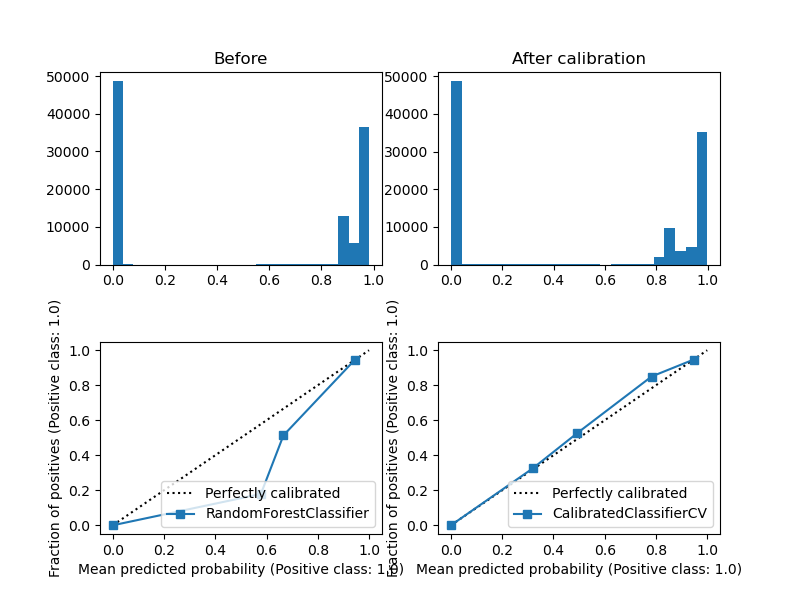

Table of Contents
- 1. task
- 2. exploring
- 3. correlation analysis
- 3.1. "no tag" vs "with tags" x7
- 3.2. "with tags" vs tag == 'fclick'
- 3.3. "with tags" vs tag == 'vregistration'
- 3.4. "with tags" vs tag == 'registration'
- 3.5. "with tags" vs tag == 'vcontent'
- 3.6. "with tags" vs tag == 'vsignup'
- 3.7. "with tags" vs tag == 'vmisc'
- 3.8. "with tags" vs tag == 'vlead'
- 3.9. "with tags" vs tag == 'signup'
- 3.10. "with tags" vs tag == 'misc'
- 3.11. "with tags" vs tag == 'lead'
- 3.12. "with tags" vs tag == 'content'
- 4. prediction
- 4.1. prepare data
- 4.2. zero classifier
- 4.3. oversampling with SMOTE
- 4.4. zero classifier for oversampled
- 4.5. selection of metric
- 4.6. correlation analysis + Variance Inflation Factor
- 4.7. seletion of model
- 4.8. model finetuning and training
- 4.9. test or validation of model
- 4.10. model output calibration
- 4.11. test calibrated
1. task
https://hh.ru/vacancy/87948954?hhtmFrom=chat
https://chatik.hh.ru/chat/3482754117
Python программист-разработчик – Python Developer https://hh.ru/vacancy/87948954
AllmaGen США allmagen.com
2. exploring
interview.X.csv and interview.y.csv - показы и события.
2.1. interview.X.csv
import pandas as pd from myown_pack.exploring import describe from myown_pack.exploring import explore_sparse_classes df = pd.read_csv('interview.X.csv') print(df.head(5).to_string()) print(df.tail(5).to_string()) describe(df) explore_sparse_classes(df)
reg_time uid fc_imp_chk fc_time_chk utmtr mm_dma osName model hardware site_id
0 2021-07-21 19:25:47 00000000-0000-0001-6268-955448351062 0 7 6 530 iOS iPhone XR Mobile Phone soaps.sheknows.com
1 2021-07-21 19:25:51 00000000-0000-0001-6268-955448381600 0 7 6 612 iOS iPhone Mobile Phone www.forbes.com
2 2021-07-21 19:25:52 00000000-0000-0001-6268-955460621935 0 7 6 524 Android SM-G998U Mobile Phone www.parents.com
3 2021-07-21 19:26:05 00000000-0000-0001-6268-955631601064 0 7 6 659 iOS iPhone Mobile Phone livingforthesunshine.com
4 2021-07-21 19:26:05 00000000-0000-0001-6268-955659731502 0 7 6 505 iOS iPhone Mobile Phone www.pro-football-reference.com
reg_time uid fc_imp_chk fc_time_chk utmtr mm_dma osName model hardware site_id
955234 2021-08-06 20:25:03 00000000-0000-0001-6282-518776541959 1 6 4 524 iOS iPhone Mobile Phone www.forsythnews.com
955235 2021-08-07 02:04:56 00000000-0000-0001-6283-018960011814 0 7 0 524 Android SM-N986U Mobile Phone currently.att.yahoo.com
955236 2021-08-09 00:47:42 00000000-0000-0001-6284-700631301210 0 7 0 0 Android SM-N986U Mobile Phone www.ladbible.com
955237 2021-08-09 02:48:05 00000000-0000-0001-6284-772865041722 0 7 0 0 iOS iPhone Mobile Phone www.ladbible.com
955238 2021-08-09 02:48:05 00000000-0000-0001-6284-772863251200 0 7 0 0 iOS iPhone Mobile Phone www.ladbible.com
fc_imp_chk fc_time_chk utmtr mm_dma
count 955239.000000 955239.000000 955239.000000 955239.000000
mean 0.185832 6.914158 3.258058 523.416025
std 0.715118 0.280967 2.372753 130.622881
min -1.000000 -1.000000 0.000000 0.000000
25% 0.000000 7.000000 1.000000 505.000000
50% 0.000000 7.000000 3.000000 524.000000
75% 0.000000 7.000000 5.000000 567.000000
max 4.000000 7.000000 7.000000 881.000000
reg_time uid osName model hardware site_id
count 955239 955239 947347 946844 947054 955239
unique 640973 954978 11 1480 8 11290
top 2021-07-26 01:34:52 00000000-0000-0001-6271-783482221787 iOS iPhone Mobile Phone www.dailymotion.com
freq 10 5 712232 622333 946415 150709
reg_time object
uid object
fc_imp_chk int64
fc_time_chk int64
utmtr int64
mm_dma int64
osName object
model object
hardware object
site_id object
dtype: object
reg_time total features: 640973
percent 1 records: 9552 categories: 640973
features lower percent 640973
2021-07-26 01:34:52 0.001047
2021-08-05 01:20:24 0.000942
2021-08-04 00:24:04 0.000942
2021-07-22 10:55:03 0.000942
2021-07-22 10:17:48 0.000942
2021-07-30 00:15:38 0.000942
2021-07-22 11:47:39 0.000942
2021-07-24 01:33:48 0.000837
2021-07-31 00:15:47 0.000837
2021-07-26 00:16:22 0.000837
2021-07-27 00:43:53 0.000837
2021-07-22 10:39:20 0.000837
2021-08-06 06:57:27 0.000837
2021-07-27 01:00:26 0.000837
2021-07-22 10:39:55 0.000837
2021-08-04 18:32:48 0.000837
2021-07-30 00:11:40 0.000837
2021-07-24 02:09:47 0.000837
2021-08-03 01:53:52 0.000837
2021-07-30 00:20:31 0.000837
uid total features: 954978
percent 1 records: 9552 categories: 954978
features lower percent 954978
00000000-0000-0001-6271-783482221787 0.000523
00000000-0000-0001-6279-596848711124 0.000314
00000000-0000-0001-6275-961133851702 0.000314
00000000-0000-0001-6280-827379751066 0.000314
00000000-0000-0001-6274-462908321857 0.000314
00000000-0000-0001-6275-466475421332 0.000314
00000000-0000-0001-6274-878811161019 0.000314
00000000-0000-0001-6269-611911211679 0.000209
00000000-0000-0001-6270-087630661691 0.000209
00000000-0000-0001-6273-627241261195 0.000209
00000000-0000-0001-6278-143043971816 0.000209
00000000-0000-0001-6271-850071761181 0.000209
00000000-0000-0001-6273-932128981384 0.000209
00000000-0000-0001-6274-632755191309 0.000209
00000000-0000-0001-6276-734908821349 0.000209
00000000-0000-0001-6268-962454071260 0.000209
00000000-0000-0001-6280-978976721051 0.000209
00000000-0000-0001-6278-654917821841 0.000209
00000000-0000-0001-6278-551412201752 0.000209
00000000-0000-0001-6275-193265761180 0.000209
osName total features: 11
iOS 75.181744
Android 24.793238
Windows 10 0.018789
Windows 7 0.001794
Tizen 0.001583
Symbian 0.001372
Linux 0.000739
Windows 8.1 0.000211
Windows XP 0.000211
OS X 0.000211
KaiOS 0.000106
model total features: 1480
percent 1 records: 9552 categories: 1477
features lower percent 1477
iPhone 65.727089
iPhone 11 1.682748
iPhone XR 1.216673
iPhone 12 Pro Max 0.887686
SM-G973U 0.827275
SM-G991U 0.812277
iPhone 12 0.753873
SM-G960U 0.749226
SM-G975U 0.712367
SM-G970U 0.703178
iPhone 11 Pro Max 0.672339
iPhone 8 Plus 0.586263
SM-G998U 0.578554
iPhone 12 Pro 0.547820
iPhone 8 0.485719
SM-N986U 0.474841
SM-G965U 0.464702
SM-N960U 0.458259
SM-N975U 0.448332
Pixel 4a 0.417703
hardware total features: 8
Mobile Phone 99.932528
Media Player 0.041814
Desktop 0.021963
Refrigerator 0.001584
Mobile+Phone 0.000845
Tablet 0.000634
Data Collection Terminal 0.000528
Digital Home Assistant 0.000106
site_id total features: 11290
percent 1 records: 9552 categories: 11278
features lower percent 11278
www.dailymotion.com 15.777099
whatculture.com 10.717527
nypost.com 7.753348
www.digitalspy.com 2.971508
www.yahoo.com 1.992800
people.com 1.791384
my.xfinity.com 1.665552
myfox8.com 1.620956
www.elle.com 1.606195
finance.yahoo.com 1.312132
www.stltoday.com 1.201898
www.foxbusiness.com 1.005822
www.wowhead.com 0.915268
currently.att.yahoo.com 0.756669
metropcs.mobileposse.com 0.747038
news.yahoo.com 0.731754
www.woodtv.com 0.697522
tbc.wowhead.com 0.666221
hu.motorsport.com 0.654077
thespun.com 0.619531
2.2. interview.y.csv
import pandas as pd from myown_pack.exploring import describe from myown_pack.exploring import explore_sparse_classes df = pd.read_csv('interview.y.csv') # print(df.head(5).to_string()) # print(df.tail(5).to_string()) describe(df) explore_sparse_classes(df)
uid tag
count 15359 15359
unique 9661 11
top 00000000-0000-0001-6269-125248461755 vregistration
freq 20 6340
uid tag
count 15359 15359
unique 9661 11
top 00000000-0000-0001-6269-125248461755 vregistration
freq 20 6340
uid object
tag object
dtype: object
uid total features: 9661
percent 1 records: 154 categories: 9661
features lower percent 9661
00000000-0000-0001-6269-125248461755 0.130217
00000000-0000-0001-6269-728114091454 0.110684
00000000-0000-0001-6269-928102541212 0.065108
00000000-0000-0001-6277-863996211392 0.058598
00000000-0000-0001-6273-182905651400 0.045576
00000000-0000-0001-6269-481304751725 0.045576
00000000-0000-0001-6278-353911501092 0.045576
00000000-0000-0001-6270-532216211741 0.045576
00000000-0000-0001-6274-785161591911 0.039065
00000000-0000-0001-6270-486004111650 0.039065
00000000-0000-0001-6272-697065271970 0.039065
00000000-0000-0001-6270-543462391381 0.039065
00000000-0000-0001-6274-383563711482 0.039065
00000000-0000-0001-6279-929464491375 0.039065
00000000-0000-0001-6269-035657391606 0.039065
00000000-0000-0001-6269-704868931197 0.039065
00000000-0000-0001-6276-877153691916 0.039065
00000000-0000-0001-6271-334367641288 0.039065
00000000-0000-0001-6270-515750861306 0.039065
00000000-0000-0001-6270-449607921642 0.039065
tag total features: 11
vregistration 41.278729
registration 27.104629
fclick 25.665733
vcontent 3.274953
vsignup 1.608178
vlead 0.429715
vmisc 0.299499
signup 0.175793
content 0.110684
misc 0.026043
lead 0.026043
2.3. connection by uid
X.csv is large, we will take a part of it
We can see that
- Uid is uniqie in X.csv. One uid have several tags.
- 0.001 of X.csv have corresponding record in y.csv
- every uid in X have only one tag in y.
import pandas as pd import numpy as np from myown_pack.exploring import count_fkey dfx = pd.read_csv('interview.X.csv') dfy = pd.read_csv('interview.y.csv') dfy.drop_duplicates(["uid", "tag"], inplace=True) dfx = dfx.sample(frac=0.02, random_state=42) print("dfx.shape", dfx.shape) print("-- dfx.uid, dfy.uid:") count_fkey(dfx.uid, dfy.uid) print("-- dfy.uid, dfx.uid:") count_fkey(dfy.uid, dfx.uid)
dfx.shape (19105, 10) -- dfx.uid, dfy.uid: Count of unique values of the first key and count of values in the second key: [uid]: 19105 [uid]: 12477 True is values of the first key that exist in the second key: values count 0 False 18911 1 True 194 -- dfy.uid, dfx.uid: Count of unique values of the first key and count of values in the second key: [uid]: 9661 [uid]: 19105 True is values of the first key that exist in the second key: values count 0 False 9467 1 True 194
2.4. explore interview.X.csv connection by uid
Lets explore part of X.csv that have uid in y.csv. and compare with 2.1
- nypost.com is more frequent than www.dailymotion.com here.
- www.dailymotion.com is more frequent in full X.csv.
import pandas as pd from myown_pack.exploring import describe from myown_pack.exploring import explore_sparse_classes df = pd.read_csv('interview.X.csv') dfy = pd.read_csv('interview.y.csv') df = df[df['uid'].isin(dfy['uid'])] print("df.shape", df.shape) print(df.head(5).to_string()) print(df.tail(5).to_string()) describe(df) explore_sparse_classes(df)
df.shape (9646, 10)
reg_time uid fc_imp_chk fc_time_chk utmtr mm_dma osName model hardware site_id
72 2021-07-21 19:29:20 00000000-0000-0001-6268-957597321099 0 7 6 517 Android SM-N960U Mobile Phone dotesports.com
81 2021-07-21 19:29:54 00000000-0000-0001-6268-957946481763 0 7 6 505 Android Pixel 4a Mobile Phone online.seterra.com
83 2021-07-21 19:30:05 00000000-0000-0001-6268-958052831367 0 7 6 501 iOS iPhone Mobile Phone hiphopdx.com
86 2021-07-21 19:30:15 00000000-0000-0001-6268-958153731939 0 7 6 517 Android SM-G991U Mobile Phone www.vivaelbirdos.com
111 2021-07-21 19:32:05 00000000-0000-0001-6268-959263331420 0 7 6 517 Android SM-N975U Mobile Phone www.landgrantholyland.com
reg_time uid fc_imp_chk fc_time_chk utmtr mm_dma osName model hardware site_id
954731 2021-08-06 15:17:18 00000000-0000-0001-6282-630399791507 3 6 5 617 Android SM-G991U Mobile Phone whatculture.com
954764 2021-08-06 15:18:15 00000000-0000-0001-6282-630943861926 0 7 5 556 iOS iPhone Mobile Phone www.digitalspy.com
955196 2021-08-06 15:27:50 00000000-0000-0001-6282-636710091771 1 6 5 0 Android SM-G975U Mobile Phone www.digitalspy.com
955222 2021-08-06 16:05:52 00000000-0000-0001-6282-626705991151 3 6 5 567 iOS iPhone Mobile Phone whatculture.com
955226 2021-08-06 16:20:32 00000000-0000-0001-6282-668264431034 3 6 5 524 iOS iPhone Mobile Phone whatculture.com
fc_imp_chk fc_time_chk utmtr mm_dma
count 9646.000000 9646.000000 9646.000000 9646.000000
mean 0.193863 6.910844 3.494505 507.939042
std 0.724844 0.284984 2.357724 152.265613
min 0.000000 6.000000 0.000000 0.000000
25% 0.000000 7.000000 1.000000 505.000000
50% 0.000000 7.000000 4.000000 524.000000
75% 0.000000 7.000000 5.000000 560.000000
max 4.000000 7.000000 7.000000 881.000000
reg_time uid osName model hardware site_id
count 9646 9646 9557 9554 9554 9646
unique 9581 9583 6 365 5 1474
top 2021-08-03 13:18:39 00000000-0000-0001-6270-822336041713 iOS iPhone Mobile Phone nypost.com
freq 2 2 5753 5165 9442 1545
reg_time object
uid object
fc_imp_chk int64
fc_time_chk int64
utmtr int64
mm_dma int64
osName object
model object
hardware object
site_id object
dtype: object
reg_time total features: 9581
percent 1 records: 96 categories: 9581
features lower percent 9581
2021-08-03 13:18:39 0.020734
2021-07-22 10:57:48 0.020734
2021-08-03 20:21:18 0.020734
2021-07-26 00:20:48 0.020734
2021-07-23 15:13:42 0.020734
2021-07-23 14:30:04 0.020734
2021-08-06 03:54:30 0.020734
2021-08-02 11:32:41 0.020734
2021-07-22 15:22:03 0.020734
2021-07-22 12:05:49 0.020734
2021-08-06 06:09:14 0.020734
2021-07-24 10:20:15 0.020734
2021-07-22 15:13:11 0.020734
2021-07-22 12:05:38 0.020734
2021-07-23 19:42:47 0.020734
2021-07-28 02:10:36 0.020734
2021-07-26 21:36:12 0.020734
2021-08-01 19:21:37 0.020734
2021-07-22 08:40:45 0.020734
2021-07-27 13:35:28 0.020734
uid total features: 9583
percent 1 records: 96 categories: 9583
features lower percent 9583
00000000-0000-0001-6270-822336041713 0.020734
00000000-0000-0001-6282-551868761078 0.020734
00000000-0000-0001-6271-002385111706 0.020734
00000000-0000-0001-6278-143043971816 0.020734
00000000-0000-0001-6276-595084281182 0.020734
00000000-0000-0001-6281-252263751170 0.020734
00000000-0000-0001-6280-942294611607 0.020734
00000000-0000-0001-6269-928102541212 0.020734
00000000-0000-0001-6273-775729301680 0.020734
00000000-0000-0001-6274-729142971293 0.020734
00000000-0000-0001-6272-145865621814 0.020734
00000000-0000-0001-6281-301148691126 0.020734
00000000-0000-0001-6276-496120041920 0.020734
00000000-0000-0001-6281-365316241249 0.020734
00000000-0000-0001-6281-266796571270 0.020734
00000000-0000-0001-6276-793304061177 0.020734
00000000-0000-0001-6271-132133851742 0.020734
00000000-0000-0001-6280-285234721668 0.020734
00000000-0000-0001-6280-969859241058 0.020734
00000000-0000-0001-6271-439830551305 0.020734
osName total features: 6
iOS 60.196714
Android 38.715078
Windows 10 0.994036
Windows 7 0.062781
Symbian 0.020927
Linux 0.010464
model total features: 365
percent 1 records: 96 categories: 356
features lower percent 356
iPhone 54.061126
SM-G973U 1.863094
SM-G991U 1.685158
SM-G975U 1.444421
SM-G970U 1.413021
SM-G998U 1.350220
LM-Q730 1.214151
SM-G960U 1.119950
SM-N986U 1.036215
iPhone 11 0.994348
Chrome - Windows 0.994348
SM-N975U 0.921080
SM-G781U 0.910613
SM-G996U 0.847812
LM-K500 0.837346
SM-G986U 0.764078
iPhone XR 0.732677
SM-G965U 0.732677
SM-N960U 0.659410
SM-A215U 0.648943
hardware total features: 5
Mobile Phone 98.827716
Desktop 1.067616
Tablet 0.052334
Media Player 0.041867
Mobile+Phone 0.010467
site_id total features: 1474
percent 1 records: 96 categories: 1461
features lower percent 1460
nypost.com 16.017002
whatculture.com 14.316815
www.dailymotion.com 6.054323
www.digitalspy.com 3.742484
myfox8.com 3.390006
www.elle.com 2.311839
www.yahoo.com 2.270371
my.xfinity.com 1.917893
www.woodtv.com 1.658719
people.com 1.254406
www.foxbusiness.com 1.212938
whnt.com 1.067800
www.stltoday.com 1.047066
news.yahoo.com 0.995231
www.wane.com 0.663487
hu.motorsport.com 0.642753
finance.yahoo.com 0.611652
thespun.com 0.611652
metropcs.mobileposse.com 0.559818
stocktwits.com 0.507983
2.5. How meny uids repeats?
import pandas as pd from myown_pack.exploring import describe from myown_pack.exploring import explore_sparse_classes # df = pd.read_csv('interview.X.csv') dfy = pd.read_csv('interview.y.csv') ut = {} print("repeats of uids inside tag( without duplicates, all):") print(dfy.drop_duplicates().shape, dfy.shape) for v in dfy.tag.unique(): ut[v] = dfy[dfy['tag'] == v].uid.tolist() print(v, len(set(ut[v])), len(dfy[dfy['tag'] == v].uid.tolist())) # print(dfy.uid.tolist()) # df = df[df['uid'].isin(dfy['uid'])] # print("df.shape", df.shape) # print(df.head(5).to_string())
repeats of uids inside tag( without duplicates, all): (12477, 2) (15359, 2) fclick 3780 3942 vregistration 5493 6340 registration 2380 4163 vcontent 455 503 vsignup 229 247 vmisc 42 46 vlead 63 66 signup 17 27 misc 3 4 lead 3 4 content 12 17
2.6. count empty or na
import pandas as pd from myown_pack.exploring import corr_analysis from myown_pack.exploring import frequency_analysis from myown_pack.exploring import describe dfx = pd.read_csv('interview.X.csv') dfy = pd.read_csv('interview.y.csv') dfy.drop_duplicates(["uid", "tag"], inplace=True) # dfx = dfx.sample(frac=0.05, random_state=42) df = pd.merge(dfx, dfy, on="uid", how="left") print(df.isna().sum())
reg_time 0 uid 0 fc_imp_chk 0 fc_time_chk 0 utmtr 0 mm_dma 0 osName 7914 model 8418 hardware 8208 site_id 0 tag 945593 dtype: int64
2.7. fclick
We cat see that fclick event is very rare and y target is skewed in interview.X.csv
We have 3780 fclick events.
import pandas as pd from myown_pack.exploring import describe from myown_pack.exploring import explore_sparse_classes dfx = pd.read_csv('interview.X.csv') dfy = pd.read_csv('interview.y.csv') dfx = dfx.sample(frac=0.06, random_state=42) # ------- 1) fraction of 0.06 of interview.X.csv # - merge x and y - join dataframes # print(dfy.groupby('tag').tag.size()) dfy.drop_duplicates(["uid", "tag"], inplace=True) df = pd.merge(dfx, dfy, on="uid", how="left") # - select rows we require df.drop(columns=['uid'], inplace=True) # - prepare major columns df['tag'].fillna(0, inplace=True) tags = dfy.tag.unique().tolist() # ['fclick', 'vregistration', 'registration', 'vcontent', 'vsignup', 'vmisc', 'vlead', 'signup', 'misc', 'lead', 'content'] tag = 'fclick' tags2 = tags.copy() tags2.remove(tag) df.replace(tags2, 0, inplace=True) df.replace('fclick', 1, inplace=True) # id filed: df.reset_index(drop=True, inplace=True) describe(df[['tag']]) print(df['tag'].value_counts()) from myown_pack.common import values_byfreq values_byfreq(df['tag'], min_freq=0.3) # ------- 2) count of all flicks df = dfy # - select rows we require df.drop(columns=['uid'], inplace=True) # - prepare major columns df['tag'].fillna(0, inplace=True) tags = dfy.tag.unique().tolist() # ['fclick', 'vregistration', 'registration', 'vcontent', 'vsignup', 'vmisc', 'vlead', 'signup', 'misc', 'lead', 'content'] tag = 'fclick' tags2 = tags.copy() tags2.remove(tag) df.replace(tags2, 0, inplace=True) df.replace('fclick', 1, inplace=True) # id filed: df.reset_index(drop=True, inplace=True) describe(df[['tag']]) print(df['tag'].value_counts()) from myown_pack.common import values_byfreq values_byfreq(df['tag'], min_freq=0.3)
tag
count 57497.000000
mean 0.004070
std 0.063665
min 0.000000
25% 0.000000
50% 0.000000
75% 0.000000
max 1.000000
tag
0 57263
1 234
Name: count, dtype: int64
vcp_s tag
0 0.99593
1 0.00407
Name: count, dtype: float64
tag
count 12477.000000
mean 0.302957
std 0.459555
min 0.000000
25% 0.000000
50% 0.000000
75% 1.000000
max 1.000000
tag
0 8697
1 3780
Name: count, dtype: int64
vcp_s tag
0 0.697043
1 0.302957
Name: count, dtype: float64
3. correlation analysis
for all analysis we take 0.05 random records from "interview.X.csv".
3.1. "no tag" vs "with tags" x7
Lets set tags field for nan as 0 and "with tag" as 1. We multiply "with tags" by 7 just to see better on plot difference.
import pandas as pd from myown_pack.exploring import corr_analysis from myown_pack.exploring import frequency_analysis from myown_pack.exploring import describe dfx = pd.read_csv('interview.X.csv') dfy = pd.read_csv('interview.y.csv') dfy.drop_duplicates(["uid", "tag"], inplace=True) dfx = dfx.sample(frac=0.05, random_state=42) tags = dfy.tag.unique().tolist() print(tags) # ['fclick', 'vregistration', 'registration', 'vcontent', 'vsignup', 'vmisc', 'vlead', 'signup', 'misc', 'lead', 'content'] # tag = 'fclick' # 1) merge x and y df = pd.merge(dfx, dfy, on="uid", how="left") # 2) tag nan => 0 df['tag'].fillna(0, inplace=True) # print(df.isna().sum()) # print(df.shape) # df.dropna(subset=['tag'], inplace=True) # 3) filter tag != 0 - to filter dfy with tags only # df = df[df['tag'] != 0] # 4) tag != tag => 0 - to see only one tag and others at background # tags2 = tags.copy() # tags2.remove(tag) # print(tags2) # 3) replace all tags as 1 df.replace(tags, 1, inplace=True) # print(df.head(15).to_string()) # df = df[df['tag'] != 0] # print(df['tag'].unique()) # 5) drop timeline and uid df.drop(columns=['uid', 'reg_time'], inplace=True) # 6) increase "with tag" dfw = df[df['tag'] == 1] df = pd.concat([df, dfw], ignore_index=True) # x2 df = pd.concat([df, dfw], ignore_index=True) # x3 df = pd.concat([df, dfw], ignore_index=True) # x4 df = pd.concat([df, dfw], ignore_index=True) # x5 df = pd.concat([df, dfw], ignore_index=True) # x6 df = pd.concat([df, dfw], ignore_index=True) # x7 # 7) frequency_analysis(df, target='tag', image_save='./imgs/no_vs_tag.png', t0=0, t1=1)
3.2. "with tags" vs tag == 'fclick'
import pandas as pd from myown_pack.exploring import corr_analysis from myown_pack.exploring import frequency_analysis from myown_pack.exploring import describe dfx = pd.read_csv('interview.X.csv') dfy = pd.read_csv('interview.y.csv') dfy.drop_duplicates(["uid", "tag"], inplace=True) dfx = dfx.sample(frac=0.05, random_state=42) tags = dfy.tag.unique().tolist() print(tags) # ['fclick', 'vregistration', 'registration', 'vcontent', 'vsignup', 'vmisc', 'vlead', 'signup', 'misc', 'lead', 'content'] tag = 'fclick' # 1) merge x and y df = pd.merge(dfx, dfy, on="uid", how="left") # 2) tag nan => 0 df['tag'].fillna(0, inplace=True) # 3) filter tag != 0 - to filter dfy with tags only df = df[df['tag'] != 0] # 4) tag != tag => 0 - to see only one tag and others at background tags2 = tags.copy() tags2.remove(tag) # print(tags2) df.replace(tags2, 0, inplace=True) # 5) drop timeline and uid df.drop(columns=['uid', 'reg_time'], inplace=True) # 6) frequency_analysis(df, target='tag', image_save=f'./imgs/no_vs_{tag}.png', t0=0, t1=tag)
3.3. "with tags" vs tag == 'vregistration'
import pandas as pd from myown_pack.exploring import corr_analysis from myown_pack.exploring import frequency_analysis from myown_pack.exploring import describe dfx = pd.read_csv('interview.X.csv') dfy = pd.read_csv('interview.y.csv') dfy.drop_duplicates(["uid", "tag"], inplace=True) dfx = dfx.sample(frac=0.05, random_state=42) tags = dfy.tag.unique().tolist() print(tags) # ['fclick', 'vregistration', 'registration', 'vcontent', 'vsignup', 'vmisc', 'vlead', 'signup', 'misc', 'lead', 'content'] tag = 'vregistration' # 1) merge x and y df = pd.merge(dfx, dfy, on="uid", how="left") # 2) tag nan => 0 df['tag'].fillna(0, inplace=True) # 3) filter tag != 0 - to filter dfy with tags only df = df[df['tag'] != 0] # 4) tag != tag => 0 - to see only one tag and others at background tags2 = tags.copy() tags2.remove(tag) # print(tags2) df.replace(tags2, 0, inplace=True) # 5) drop timeline and uid df.drop(columns=['uid', 'reg_time'], inplace=True) # 6) frequency_analysis(df, target='tag', image_save=f'./imgs/no_vs_{tag}.png', t0=0, t1=tag)
3.4. "with tags" vs tag == 'registration'
import pandas as pd from myown_pack.exploring import corr_analysis from myown_pack.exploring import frequency_analysis from myown_pack.exploring import describe dfx = pd.read_csv('interview.X.csv') dfy = pd.read_csv('interview.y.csv') dfy.drop_duplicates(["uid", "tag"], inplace=True) dfx = dfx.sample(frac=0.05, random_state=42) tags = dfy.tag.unique().tolist() print(tags) # ['fclick', 'vregistration', 'registration', 'vcontent', 'vsignup', 'vmisc', 'vlead', 'signup', 'misc', 'lead', 'content'] tag = 'registration' # 1) merge x and y df = pd.merge(dfx, dfy, on="uid", how="left") # 2) tag nan => 0 df['tag'].fillna(0, inplace=True) # 3) filter tag != 0 - to filter dfy with tags only df = df[df['tag'] != 0] # 4) tag != tag => 0 - to see only one tag and others at background tags2 = tags.copy() tags2.remove(tag) # print(tags2) df.replace(tags2, 0, inplace=True) # 5) drop timeline and uid df.drop(columns=['uid', 'reg_time'], inplace=True) # 6) frequency_analysis(df, target='tag', image_save=f'./imgs/no_vs_{tag}.png', t0=0, t1=tag)
3.5. "with tags" vs tag == 'vcontent'
import pandas as pd from myown_pack.exploring import corr_analysis from myown_pack.exploring import frequency_analysis from myown_pack.exploring import describe dfx = pd.read_csv('interview.X.csv') dfy = pd.read_csv('interview.y.csv') dfy.drop_duplicates(["uid", "tag"], inplace=True) dfx = dfx.sample(frac=0.05, random_state=42) tags = dfy.tag.unique().tolist() print(tags) # ['fclick', 'vregistration', 'registration', 'vcontent', 'vsignup', 'vmisc', 'vlead', 'signup', 'misc', 'lead', 'content'] tag = 'vcontent' # 1) merge x and y df = pd.merge(dfx, dfy, on="uid", how="left") # 2) tag nan => 0 df['tag'].fillna(0, inplace=True) # 3) filter tag != 0 - to filter dfy with tags only df = df[df['tag'] != 0] # 4) tag != tag => 0 - to see only one tag and others at background tags2 = tags.copy() tags2.remove(tag) # print(tags2) df.replace(tags2, 0, inplace=True) # 5) drop timeline and uid df.drop(columns=['uid', 'reg_time'], inplace=True) # 6) frequency_analysis(df, target='tag', image_save=f'./imgs/no_vs_{tag}.png', t0=0, t1=tag)
3.6. "with tags" vs tag == 'vsignup'
import pandas as pd from myown_pack.exploring import corr_analysis from myown_pack.exploring import frequency_analysis from myown_pack.exploring import describe dfx = pd.read_csv('interview.X.csv') dfy = pd.read_csv('interview.y.csv') dfy.drop_duplicates(["uid", "tag"], inplace=True) dfx = dfx.sample(frac=0.05, random_state=42) tags = dfy.tag.unique().tolist() print(tags) # ['fclick', 'vregistration', 'registration', 'vcontent', 'vsignup', 'vmisc', 'vlead', 'signup', 'misc', 'lead', 'content'] tag = 'vsignup' # 1) merge x and y df = pd.merge(dfx, dfy, on="uid", how="left") # 2) tag nan => 0 df['tag'].fillna(0, inplace=True) # 3) filter tag != 0 - to filter dfy with tags only df = df[df['tag'] != 0] # 4) tag != tag => 0 - to see only one tag and others at background tags2 = tags.copy() tags2.remove(tag) # print(tags2) df.replace(tags2, 0, inplace=True) # 5) drop timeline and uid df.drop(columns=['uid', 'reg_time'], inplace=True) # 6) frequency_analysis(df, target='tag', image_save=f'./imgs/no_vs_{tag}.png', t0=0, t1=tag)
3.7. "with tags" vs tag == 'vmisc'
import pandas as pd from myown_pack.exploring import corr_analysis from myown_pack.exploring import frequency_analysis from myown_pack.exploring import describe dfx = pd.read_csv('interview.X.csv') dfy = pd.read_csv('interview.y.csv') dfy.drop_duplicates(["uid", "tag"], inplace=True) dfx = dfx.sample(frac=0.05, random_state=42) tags = dfy.tag.unique().tolist() print(tags) # ['fclick', 'vregistration', 'registration', 'vcontent', 'vsignup', 'vmisc', 'vlead', 'signup', 'misc', 'lead', 'content'] tag = 'vmisc' # 1) merge x and y df = pd.merge(dfx, dfy, on="uid", how="left") # 2) tag nan => 0 df['tag'].fillna(0, inplace=True) # 3) filter tag != 0 - to filter dfy with tags only df = df[df['tag'] != 0] # 4) tag != tag => 0 - to see only one tag and others at background tags2 = tags.copy() tags2.remove(tag) # print(tags2) df.replace(tags2, 0, inplace=True) # 5) drop timeline and uid df.drop(columns=['uid', 'reg_time'], inplace=True) # 6) frequency_analysis(df, target='tag', image_save=f'./imgs/no_vs_{tag}.png', t0=0, t1=tag)
3.8. "with tags" vs tag == 'vlead'
import pandas as pd from myown_pack.exploring import corr_analysis from myown_pack.exploring import frequency_analysis from myown_pack.exploring import describe dfx = pd.read_csv('interview.X.csv') dfy = pd.read_csv('interview.y.csv') dfy.drop_duplicates(["uid", "tag"], inplace=True) dfx = dfx.sample(frac=0.05, random_state=42) tags = dfy.tag.unique().tolist() print(tags) # ['fclick', 'vregistration', 'registration', 'vcontent', 'vsignup', 'vmisc', 'vlead', 'signup', 'misc', 'lead', 'content'] tag = 'vlead' # 1) merge x and y df = pd.merge(dfx, dfy, on="uid", how="left") # 2) tag nan => 0 df['tag'].fillna(0, inplace=True) # 3) filter tag != 0 - to filter dfy with tags only df = df[df['tag'] != 0] # 4) tag != tag => 0 - to see only one tag and others at background tags2 = tags.copy() tags2.remove(tag) # print(tags2) df.replace(tags2, 0, inplace=True) # 5) drop timeline and uid df.drop(columns=['uid', 'reg_time'], inplace=True) # 6) frequency_analysis(df, target='tag', image_save=f'./imgs/no_vs_{tag}.png', t0=0, t1=tag)
3.9. "with tags" vs tag == 'signup'
import pandas as pd from myown_pack.exploring import corr_analysis from myown_pack.exploring import frequency_analysis from myown_pack.exploring import describe dfx = pd.read_csv('interview.X.csv') dfy = pd.read_csv('interview.y.csv') dfy.drop_duplicates(["uid", "tag"], inplace=True) dfx = dfx.sample(frac=0.05, random_state=42) tags = dfy.tag.unique().tolist() print(tags) # ['fclick', 'vregistration', 'registration', 'vcontent', 'vsignup', 'vmisc', 'vlead', 'signup', 'misc', 'lead', 'content'] tag = 'signup' # 1) merge x and y df = pd.merge(dfx, dfy, on="uid", how="left") # 2) tag nan => 0 df['tag'].fillna(0, inplace=True) # 3) filter tag != 0 - to filter dfy with tags only df = df[df['tag'] != 0] # 4) tag != tag => 0 - to see only one tag and others at background tags2 = tags.copy() tags2.remove(tag) # print(tags2) df.replace(tags2, 0, inplace=True) # 5) drop timeline and uid df.drop(columns=['uid', 'reg_time'], inplace=True) # 6) frequency_analysis(df, target='tag', image_save=f'./imgs/no_vs_{tag}.png', t0=0, t1=tag)
3.10. "with tags" vs tag == 'misc'
import pandas as pd from myown_pack.exploring import corr_analysis from myown_pack.exploring import frequency_analysis from myown_pack.exploring import describe dfx = pd.read_csv('interview.X.csv') dfy = pd.read_csv('interview.y.csv') dfy.drop_duplicates(["uid", "tag"], inplace=True) dfx = dfx.sample(frac=0.05, random_state=42) tags = dfy.tag.unique().tolist() print(tags) # ['fclick', 'vregistration', 'registration', 'vcontent', 'vsignup', 'vmisc', 'vlead', 'signup', 'misc', 'lead', 'content'] tag = 'misc' # 1) merge x and y df = pd.merge(dfx, dfy, on="uid", how="left") # 2) tag nan => 0 df['tag'].fillna(0, inplace=True) # 3) filter tag != 0 - to filter dfy with tags only df = df[df['tag'] != 0] # 4) tag != tag => 0 - to see only one tag and others at background tags2 = tags.copy() tags2.remove(tag) # print(tags2) df.replace(tags2, 0, inplace=True) # 5) drop timeline and uid df.drop(columns=['uid', 'reg_time'], inplace=True) # 6) frequency_analysis(df, target='tag', image_save=f'./imgs/no_vs_{tag}.png', t0=0, t1=tag)
3.11. "with tags" vs tag == 'lead'
import pandas as pd from myown_pack.exploring import corr_analysis from myown_pack.exploring import frequency_analysis from myown_pack.exploring import describe dfx = pd.read_csv('interview.X.csv') dfy = pd.read_csv('interview.y.csv') dfy.drop_duplicates(["uid", "tag"], inplace=True) dfx = dfx.sample(frac=0.05, random_state=42) tags = dfy.tag.unique().tolist() print(tags) # ['fclick', 'vregistration', 'registration', 'vcontent', 'vsignup', 'vmisc', 'vlead', 'signup', 'misc', 'lead', 'content'] tag = 'lead' # 1) merge x and y df = pd.merge(dfx, dfy, on="uid", how="left") # 2) tag nan => 0 df['tag'].fillna(0, inplace=True) # 3) filter tag != 0 - to filter dfy with tags only df = df[df['tag'] != 0] # 4) tag != tag => 0 - to see only one tag and others at background tags2 = tags.copy() tags2.remove(tag) # print(tags2) df.replace(tags2, 0, inplace=True) # 5) drop timeline and uid df.drop(columns=['uid', 'reg_time'], inplace=True) # 6) frequency_analysis(df, target='tag', image_save=f'./imgs/no_vs_{tag}.png', t0=0, t1=tag)
3.12. "with tags" vs tag == 'content'
import pandas as pd from myown_pack.exploring import corr_analysis from myown_pack.exploring import frequency_analysis from myown_pack.exploring import describe dfx = pd.read_csv('interview.X.csv') dfy = pd.read_csv('interview.y.csv') dfy.drop_duplicates(["uid", "tag"], inplace=True) dfx = dfx.sample(frac=0.05, random_state=42) tags = dfy.tag.unique().tolist() print(tags) # ['fclick', 'vregistration', 'registration', 'vcontent', 'vsignup', 'vmisc', 'vlead', 'signup', 'misc', 'lead', 'content'] tag = 'content' # 1) merge x and y df = pd.merge(dfx, dfy, on="uid", how="left") # 2) tag nan => 0 df['tag'].fillna(0, inplace=True) # 3) filter tag != 0 - to filter dfy with tags only df = df[df['tag'] != 0] # 4) tag != tag => 0 - to see only one tag and others at background tags2 = tags.copy() tags2.remove(tag) # print(tags2) df.replace(tags2, 0, inplace=True) # 5) drop timeline and uid df.drop(columns=['uid', 'reg_time'], inplace=True) # 6) frequency_analysis(df, target='tag', image_save=f'./imgs/no_vs_{tag}.png', t0=0, t1=tag)
4. prediction
We will solve task "Probability of fclick" by binary classification with output calibration.
steps:
- prepare data
- select metric
- select model
- model finetuning
4.1. prepare data
The plan:
- Compose result data from merge vertically:
- all y uids records.
- 0.06 percent of other data.
- pre_process: select rows we require, prepare major columns, join dataframes
- process_by_handes: check unbalanced and empty columns, remove columns, correct types, unite columns, feature engineering,
- split to train and test
- train: remove outlieners in numerical columns
- fill nan values - train and test
- encode categorical and fix sparse classes
- select frequence to fix sparse classes
Degree of imbalance: 3044/52296=0.06 - "Extreme" imbalance.
import pandas as pd from myown_pack.common import outliers_numerical from myown_pack.common import fill_na from myown_pack.common import sparse_classes from myown_pack.common import split from myown_pack.common import encode_categorical_pipe from myown_pack.common import load from myown_pack.exploring import describe from myown_pack.common import values_byfreq dfx = pd.read_csv('interview.X.csv') dfy = pd.read_csv('interview.y.csv') # ------- 1. Compose result data from merge vertically # - y: drop duplicates dfy.drop_duplicates(["uid", "tag"], inplace=True) print("dfy['tag'].value_counts():") print(dfy['tag'].value_counts()) # - first part of join 1): merge y and x - join dataframes horizontally df1 = pd.merge(dfy, dfx, on="uid", how="inner") print("df1", df1.columns) print("df1['tag'].value_counts()") print(df1['tag'].value_counts()) describe(df1, "df1") # - mark records in X that not exist in first part (1)) df_all = dfx.merge(df1.drop_duplicates(), on=['uid'], how='left', indicator=True, suffixes=[None, '_ycolumn']) print("df_all.columns:", df_all.columns) print() # - select not exist records df_all_not = df_all[df_all['_merge'] == 'left_only'] # - drop "merge" columns df_all_not = df_all_not[[c for c in df_all_not.columns if not c.endswith('_ycolumn')]] df_all_not.drop(columns=['_merge'], inplace=True) # - get 0.06 part, this is 2) df_all_not = df_all_not.sample(frac=0.06, random_state=42) print("df_all_not", df_all_not.describe()) print("df_all_not", df_all_not.columns) describe(df_all_not, "df_all_not") # - merge vertically (1)) and (2)) df = pd.concat([df1, df_all_not], axis=0, ignore_index=True) describe(df, "df") # # ------- 2. pre_process # - major column: nan -> 0 df['tag'].fillna(0, inplace=True) # - drop uid df.drop(columns=['uid'], inplace=True) # - tag: fclick, other -> 0 tags = df.tag.unique().tolist() tag = 'fclick' tags2 = tags.copy() tags2.remove(tag) df.replace(tags2, 0, inplace=True) # - tag: fclick -> 1 df.replace('fclick', 1, inplace=True) # - reset pandas index df.reset_index(drop=True, inplace=True) describe(df, "df_final") print(df.dtypes) # ------- 3. process_by_handes: check unbalanced and empty columns, remove # ------- columns, correct types, unite columns, feature engineering, # - correct types df['reg_time'] = pd.to_datetime(df['reg_time']) # - feature engineering df['dayofweek'] = df.reg_time.dt.dayofweek df['hour'] = df.reg_time.dt.hour df['month'] = df.reg_time.dt.month df['quarter'] = df.reg_time.dt.quarter # - remove columns df.drop(columns=['reg_time'], inplace=True) # - correct types # print(df.dtypes) # ------- 4. split to train and test and save indexes p1 = 'split_train.pickle' p2 = 'split_test.pickle' split(df, p1, p2, target_col='tag') # and select columns, remove special cases, save id # ------- 5. train: remove outlieners in numerical columns p1 = outliers_numerical(p1, 0.0006, target='tag', ignore_columns=[]) # require fill_na for skew test # ------- 6. fill NaN values with mode p1 = fill_na(p1, 'fill_na_p1.pickle', id_check1='id_train.pickle') p1 = 'fill_na_p1.pickle' p2 = fill_na(p2, 'fill_na_p2.pickle', id_check1='id_test.pickle') p2 = 'fill_na_p2.pickle' # ------- 7. encode categorical # - select frequence to fix sparse classes df = load(p1) for c in df.columns: l, h = values_byfreq(df[c], min_freq=0.005) # print(l, h) print(len(l), len(h)) print() p1, encoders = encode_categorical_pipe(p1, id_check='id_train.pickle', p_save='train.pickle', min_frequency=0.005) # 1 or 0 # fill_na required # print(p1, encoders) p1 = 'train.pickle' p2, encoders = encode_categorical_pipe(p2, id_check='id_test.pickle', encoders_train=encoders, p_save='test.pickle') # 1 or 0 # fill_na required # # print("p2", p2) # p2 = 'test.pickle' df = load(p1) print(df['tag'].value_counts()) # describe(df, 'p2')
dfy['tag'].value_counts():
tag
vregistration 5493
fclick 3780
registration 2380
vcontent 455
vsignup 229
vlead 63
vmisc 42
signup 17
content 12
misc 3
lead 3
Name: count, dtype: int64
df1 Index(['uid', 'tag', 'reg_time', 'fc_imp_chk', 'fc_time_chk', 'utmtr',
'mm_dma', 'osName', 'model', 'hardware', 'site_id'],
dtype='object')
df1['tag'].value_counts()
tag
vregistration 5462
fclick 3808
registration 2394
vcontent 451
vsignup 225
vlead 63
vmisc 42
signup 17
content 11
lead 5
misc 4
Name: count, dtype: int64
describe df1:
fc_imp_chk fc_time_chk utmtr mm_dma
count 12482.000000 12482.000000 12482.000000 12482.000000
mean 0.214228 6.902660 3.497917 509.229130
std 0.763163 0.296432 2.367631 151.761701
min 0.000000 6.000000 0.000000 0.000000
25% 0.000000 7.000000 1.000000 505.000000
50% 0.000000 7.000000 4.000000 524.000000
75% 0.000000 7.000000 5.000000 561.000000
max 4.000000 7.000000 7.000000 881.000000
uid tag reg_time osName model hardware site_id
count 12482 12482 12482 12371 12367 12367 12482
unique 9583 11 9581 6 365 5 1474
top 00000000-0000-0001-6274-085318351101 vregistration 2021-08-01 02:53:18 iOS iPhone Mobile Phone nypost.com
freq 10 5462 5 7306 6517 12202 2259
df1.isna().sum():
uid 0
tag 0
reg_time 0
fc_imp_chk 0
fc_time_chk 0
utmtr 0
mm_dma 0
osName 111
model 115
hardware 115
site_id 0
dtype: int64
Values counts:
fc_imp_chk int64
fc_imp_chk
0 11267
1 559
4 322
2 175
3 159
Name: count, dtype: int64
fc_time_chk int64
fc_time_chk
7 11267
6 1215
Name: count, dtype: int64
osName object
osName
iOS 7306
Android 4906
Windows 10 138
Windows 7 15
Symbian 4
Linux 2
Name: count, dtype: int64
hardware object
hardware
Mobile Phone 12202
Desktop 155
Tablet 5
Media Player 4
Mobile+Phone 1
Name: count, dtype: int64
df_all.columns: Index(['reg_time', 'uid', 'fc_imp_chk', 'fc_time_chk', 'utmtr', 'mm_dma',
'osName', 'model', 'hardware', 'site_id', 'tag', 'reg_time_ycolumn',
'fc_imp_chk_ycolumn', 'fc_time_chk_ycolumn', 'utmtr_ycolumn',
'mm_dma_ycolumn', 'osName_ycolumn', 'model_ycolumn', 'hardware_ycolumn',
'site_id_ycolumn', '_merge'],
dtype='object')
df_all_not fc_imp_chk fc_time_chk utmtr mm_dma
count 56736.000000 56736.000000 56736.000000 56736.000000
mean 0.190884 6.912771 3.255129 523.959602
std 0.729186 0.287371 2.371447 129.450072
min -1.000000 -1.000000 0.000000 0.000000
25% 0.000000 7.000000 1.000000 505.000000
50% 0.000000 7.000000 3.000000 524.000000
75% 0.000000 7.000000 5.000000 567.000000
max 4.000000 7.000000 7.000000 881.000000
df_all_not Index(['reg_time', 'uid', 'fc_imp_chk', 'fc_time_chk', 'utmtr', 'mm_dma',
'osName', 'model', 'hardware', 'site_id', 'tag'],
dtype='object')
describe df_all_not:
fc_imp_chk fc_time_chk utmtr mm_dma
count 56736.000000 56736.000000 56736.000000 56736.000000
mean 0.190884 6.912771 3.255129 523.959602
std 0.729186 0.287371 2.371447 129.450072
min -1.000000 -1.000000 0.000000 0.000000
25% 0.000000 7.000000 1.000000 505.000000
50% 0.000000 7.000000 3.000000 524.000000
75% 0.000000 7.000000 5.000000 567.000000
max 4.000000 7.000000 7.000000 881.000000
reg_time uid osName model hardware site_id tag
count 56736 56736 56268 56241 56251 56736 0
unique 55246 56736 5 728 4 4137 0
top 2021-07-24 00:14:03 00000000-0000-0001-6272-478103421800 iOS iPhone Mobile Phone www.dailymotion.com NaN
freq 4 1 42167 36854 56224 8862 NaN
df_all_not.isna().sum():
reg_time 0
uid 0
fc_imp_chk 0
fc_time_chk 0
utmtr 0
mm_dma 0
osName 468
model 495
hardware 485
site_id 0
tag 56736
dtype: int64
Values counts:
fc_imp_chk int64
fc_imp_chk
0 51808
1 2396
4 1412
2 562
3 555
-1 3
Name: count, dtype: int64
fc_time_chk int64
fc_time_chk
7 51808
6 4925
-1 3
Name: count, dtype: int64
osName object
osName
iOS 42167
Android 14096
Windows 10 2
Symbian 2
OS X 1
Name: count, dtype: int64
hardware object
hardware
Mobile Phone 56224
Media Player 23
Desktop 3
Mobile+Phone 1
Name: count, dtype: int64
tag object
Series([], Name: count, dtype: int64)
describe df:
fc_imp_chk fc_time_chk utmtr mm_dma
count 69218.000000 69218.000000 69218.000000 69218.000000
mean 0.195094 6.910948 3.298911 521.303274
std 0.735478 0.289050 2.372579 133.867523
min -1.000000 -1.000000 0.000000 0.000000
25% 0.000000 7.000000 1.000000 505.000000
50% 0.000000 7.000000 4.000000 524.000000
75% 0.000000 7.000000 5.000000 566.000000
max 4.000000 7.000000 7.000000 881.000000
uid tag reg_time osName model hardware site_id
count 69218 12482 69218 68639 68608 68618 69218
unique 66319 11 64348 7 757 5 4445
top 00000000-0000-0001-6274-085318351101 vregistration 2021-08-01 02:53:18 iOS iPhone Mobile Phone www.dailymotion.com
freq 10 5462 5 49473 43371 68426 9517
df.isna().sum():
uid 0
tag 56736
reg_time 0
fc_imp_chk 0
fc_time_chk 0
utmtr 0
mm_dma 0
osName 579
model 610
hardware 600
site_id 0
dtype: int64
Values counts:
fc_imp_chk int64
fc_imp_chk
0 63075
1 2955
4 1734
2 737
3 714
-1 3
Name: count, dtype: int64
fc_time_chk int64
fc_time_chk
7 63075
6 6140
-1 3
Name: count, dtype: int64
hardware object
hardware
Mobile Phone 68426
Desktop 158
Media Player 27
Tablet 5
Mobile+Phone 2
Name: count, dtype: int64
describe df_final:
tag fc_imp_chk fc_time_chk utmtr mm_dma
count 69218.000000 69218.000000 69218.000000 69218.000000 69218.000000
mean 0.055015 0.195094 6.910948 3.298911 521.303274
std 0.228010 0.735478 0.289050 2.372579 133.867523
min 0.000000 -1.000000 -1.000000 0.000000 0.000000
25% 0.000000 0.000000 7.000000 1.000000 505.000000
50% 0.000000 0.000000 7.000000 4.000000 524.000000
75% 0.000000 0.000000 7.000000 5.000000 566.000000
max 1.000000 4.000000 7.000000 7.000000 881.000000
reg_time osName model hardware site_id
count 69218 68639 68608 68618 69218
unique 64348 7 757 5 4445
top 2021-08-01 02:53:18 iOS iPhone Mobile Phone www.dailymotion.com
freq 5 49473 43371 68426 9517
df_final.isna().sum():
tag 0
reg_time 0
fc_imp_chk 0
fc_time_chk 0
utmtr 0
mm_dma 0
osName 579
model 610
hardware 600
site_id 0
dtype: int64
Values counts:
tag int64
tag
0 65410
1 3808
Name: count, dtype: int64
fc_imp_chk int64
fc_imp_chk
0 63075
1 2955
4 1734
2 737
3 714
-1 3
Name: count, dtype: int64
fc_time_chk int64
fc_time_chk
7 63075
6 6140
-1 3
Name: count, dtype: int64
hardware object
hardware
Mobile Phone 68426
Desktop 158
Media Player 27
Tablet 5
Mobile+Phone 2
Name: count, dtype: int64
tag int64
reg_time object
fc_imp_chk int64
fc_time_chk int64
utmtr int64
mm_dma int64
osName object
model object
hardware object
site_id object
dtype: object
WARNING:root:id.pickle was not found.
-- ok -- id_train.pickle
-- ok -- id_test.pickle
-- ok -- split_train.pickle (55374, 13) ['tag', 'fc_imp_chk', 'fc_time_chk', 'utmtr', 'mm_dma', 'osName', 'model', 'hardware', 'site_id', 'dayofweek', 'hour', 'month', 'quarter']
-- ok -- split_test.pickle (13844, 13) ['tag', 'fc_imp_chk', 'fc_time_chk', 'utmtr', 'mm_dma', 'osName', 'model', 'hardware', 'site_id', 'dayofweek', 'hour', 'month', 'quarter']
per target 0: 32 , per target 1: 2
1
0
mm_dma_0 30
fc_imp_chk_0 2
tag_0 0
fc_time_chk_0 0
utmtr_0 0
dayofweek_0 0
hour_0 0
month_0 0
quarter_0 0
1
0
mm_dma_1 2
tag_1 0
fc_imp_chk_1 0
fc_time_chk_1 0
utmtr_1 0
dayofweek_1 0
hour_1 0
month_1 0
quarter_1 0
-- ok -- id_train.pickle
filtered: 1
0
mm_dma 32
fc_imp_chk 2
total filtered count: 34
-- ok -- without_outliers.pickle (55340, 13) ['tag', 'fc_imp_chk', 'fc_time_chk', 'utmtr', 'mm_dma', 'osName', 'model', 'hardware', 'site_id', 'dayofweek', 'hour', 'month', 'quarter']
2 unique values columns excluded: set()
NA count in categorical columns:
osName 460
model 482
site_id 0
hardware 475
fill na with mode in categorical:
osName iOS
model iPhone
site_id www.dailymotion.com
hardware Mobile Phone
Name: 0, dtype: object
ids check: 55340 55340
-- ok -- fill_na_p1.pickle (55340, 13) ['tag', 'fc_imp_chk', 'fc_time_chk', 'utmtr', 'mm_dma', 'osName', 'model', 'hardware', 'site_id', 'dayofweek', 'hour', 'month', 'quarter']
2 unique values columns excluded: set()
NA count in categorical columns:
osName 117
model 126
site_id 0
hardware 123
fill na with mode in categorical:
osName iOS
model iPhone
site_id www.dailymotion.com
hardware Mobile Phone
Name: 0, dtype: object
ids check: 13844 13844
-- ok -- fill_na_p2.pickle (13844, 13) ['tag', 'fc_imp_chk', 'fc_time_chk', 'utmtr', 'mm_dma', 'osName', 'model', 'hardware', 'site_id', 'dayofweek', 'hour', 'month', 'quarter']
vcp_s tag
0 0.944995
1 0.055005
Name: count, dtype: float64
2 0
vcp_s fc_imp_chk
0 0.911420
1 0.042826
4 0.024810
2 0.010896
3 0.010047
Name: count, dtype: float64
5 0
vcp_s fc_time_chk
7 0.91142
6 0.08858
Name: count, dtype: float64
2 0
vcp_s utmtr
0 0.196205
4 0.142158
5 0.131641
6 0.126382
3 0.120853
1 0.118594
7 0.101409
2 0.062757
Name: count, dtype: float64
8 0
vcp_s mm_dma
501 0.154951
524 0.102963
517 0.060752
0 0.051771
505 0.046476
...
500 0.000018
531 0.000018
613 0.000018
526 0.000018
543 0.000018
Name: count, Length: 130, dtype: float64
44 86
vcp_s osName
iOS 0.723310
Android 0.274250
Windows 10 0.002132
Windows 7 0.000235
Symbian 0.000054
OS X 0.000018
Name: count, dtype: float64
2 4
vcp_s model
iPhone 0.634731
iPhone 11 0.015125
iPhone XR 0.011764
SM-G973U 0.009776
SM-G991U 0.009396
...
CPH2021 0.000018
COL-L29 0.000018
SM-A105G 0.000018
3.1 Plus 0.000018
VOG-L09 0.000018
Name: count, Length: 708, dtype: float64
18 690
vcp_s hardware
Mobile Phone 0.997091
Desktop 0.002385
Media Player 0.000416
Tablet 0.000072
Mobile+Phone 0.000036
Name: count, dtype: float64
1 4
vcp_s site_id
www.dailymotion.com 0.137532
whatculture.com 0.117691
nypost.com 0.097470
www.digitalspy.com 0.032056
myfox8.com 0.019913
...
pmnewsnigeria.com 0.000018
www.ytravelblog.com 0.000018
www.papernstitchblog.com 0.000018
www.prayerandpossibilities.com 0.000018
7news.com.au 0.000018
Name: count, Length: 3984, dtype: float64
24 3960
vcp_s dayofweek
4 0.194977
3 0.194236
6 0.130484
5 0.127539
2 0.122786
0 0.122768
1 0.107210
Name: count, dtype: float64
7 0
vcp_s hour
1 0.071612
2 0.067239
0 0.057336
3 0.055548
14 0.049964
13 0.046675
12 0.045537
11 0.045392
21 0.045356
15 0.044471
16 0.044254
20 0.043892
17 0.042862
19 0.042826
10 0.041507
18 0.039646
4 0.035905
22 0.034658
9 0.033863
5 0.027214
6 0.021919
8 0.021630
23 0.021540
7 0.019154
Name: count, dtype: float64
24 0
vcp_s month
7 0.634478
8 0.365522
Name: count, dtype: float64
2 0
vcp_s quarter
3 1.0
Name: count, dtype: float64
1 0
vcp_s osName
iOS 0.723310
Android 0.274250
Windows 10 0.002132
Windows 7 0.000235
Symbian 0.000054
OS X 0.000018
Name: count, dtype: float64
vcp_s model
iPhone 0.634731
iPhone 11 0.015125
iPhone XR 0.011764
SM-G973U 0.009776
SM-G991U 0.009396
...
CPH2021 0.000018
COL-L29 0.000018
SM-A105G 0.000018
3.1 Plus 0.000018
VOG-L09 0.000018
Name: count, Length: 708, dtype: float64
vcp_s hardware
Mobile Phone 0.997091
Desktop 0.002385
Media Player 0.000416
Tablet 0.000072
Mobile+Phone 0.000036
Name: count, dtype: float64
vcp_s site_id
www.dailymotion.com 0.137532
whatculture.com 0.117691
nypost.com 0.097470
www.digitalspy.com 0.032056
myfox8.com 0.019913
...
pmnewsnigeria.com 0.000018
www.ytravelblog.com 0.000018
www.papernstitchblog.com 0.000018
www.prayerandpossibilities.com 0.000018
7news.com.au 0.000018
Name: count, Length: 3984, dtype: float64
label columns ['osName', 'hardware']
onehot columns ['model', 'site_id']
numerical columns ['tag', 'fc_imp_chk', 'fc_time_chk', 'utmtr', 'mm_dma', 'dayofweek', 'hour', 'month', 'quarter']
LabelEncoder:
infrequent_categories {'osName': array(['OS X', 'Symbian', 'Windows 10', 'Windows 7'], dtype=object), 'hardware': array(['Desktop', 'Media Player', 'Mobile+Phone', 'Tablet'], dtype=object)}
['osName', 'hardware'] OrdinalEncoder(min_frequency=0.005)
tag fc_imp_chk fc_time_chk utmtr mm_dma model site_id dayofweek hour month quarter osName hardware
0 0 0 7 0 630 iPhone www.dailymotion.com 3 0 7 3 1.0 0.0
1 0 0 7 0 501 iPhone www.lemonsforlulu.com 4 2 7 3 1.0 0.0
2 0 0 7 5 609 SM-G988U nypost.com 4 16 7 3 0.0 0.0
One-Hot result columns:
['osName', 'hardware']
after l encoder: ['osName', 'hardware'] ['osName', 'hardware']
encode_categorical_onehot:
infrequent categories for: model 1
infrequent categories for: site_id 1
One-Hot result columns:
model ['model_SM-G960U', 'model_SM-G965U', 'model_SM-G970U', 'model_SM-G973U', 'model_SM-G975U', 'model_SM-G986U', 'model_SM-G991U', 'model_SM-G998U', 'model_SM-N975U', 'model_SM-N986U', 'model_iPhone', 'model_iPhone 11', 'model_iPhone 11 Pro Max', 'model_iPhone 12', 'model_iPhone 12 Pro', 'model_iPhone 12 Pro Max', 'model_iPhone 8 Plus', 'model_iPhone XR', 'model_other']
site_id ['site_id_currently.att.yahoo.com', 'site_id_finance.yahoo.com', 'site_id_heavy.com', 'site_id_hu.motorsport.com', 'site_id_metropcs.mobileposse.com', 'site_id_my.xfinity.com', 'site_id_myfox8.com', 'site_id_news.yahoo.com', 'site_id_nypost.com', 'site_id_people.com', 'site_id_stocktwits.com', 'site_id_tbc.wowhead.com', 'site_id_thespun.com', 'site_id_whatculture.com', 'site_id_whnt.com', 'site_id_www.dailymotion.com', 'site_id_www.digitalspy.com', 'site_id_www.elle.com', 'site_id_www.foxbusiness.com', 'site_id_www.stltoday.com', 'site_id_www.wane.com', 'site_id_www.woodtv.com', 'site_id_www.wowhead.com', 'site_id_www.yahoo.com', 'site_id_other']
onehot_encoders {'model': OneHotEncoder(handle_unknown='infrequent_if_exist', min_frequency=0.005,
sparse_output=False), 'site_id': OneHotEncoder(handle_unknown='infrequent_if_exist', min_frequency=0.005,
sparse_output=False)}
Two values with NA columns:
label ['osName', 'hardware']
onehot ['model_SM-G960U', 'model_SM-G965U', 'model_SM-G970U', 'model_SM-G973U', 'model_SM-G975U', 'model_SM-G986U', 'model_SM-G991U', 'model_SM-G998U', 'model_SM-N975U', 'model_SM-N986U', 'model_iPhone', 'model_iPhone 11', 'model_iPhone 11 Pro Max', 'model_iPhone 12', 'model_iPhone 12 Pro', 'model_iPhone 12 Pro Max', 'model_iPhone 8 Plus', 'model_iPhone XR', 'model_other', 'site_id_currently.att.yahoo.com', 'site_id_finance.yahoo.com', 'site_id_heavy.com', 'site_id_hu.motorsport.com', 'site_id_metropcs.mobileposse.com', 'site_id_my.xfinity.com', 'site_id_myfox8.com', 'site_id_news.yahoo.com', 'site_id_nypost.com', 'site_id_people.com', 'site_id_stocktwits.com', 'site_id_tbc.wowhead.com', 'site_id_thespun.com', 'site_id_whatculture.com', 'site_id_whnt.com', 'site_id_www.dailymotion.com', 'site_id_www.digitalspy.com', 'site_id_www.elle.com', 'site_id_www.foxbusiness.com', 'site_id_www.stltoday.com', 'site_id_www.wane.com', 'site_id_www.woodtv.com', 'site_id_www.wowhead.com', 'site_id_www.yahoo.com', 'site_id_other']
before encoders {'model': OneHotEncoder(handle_unknown='infrequent_if_exist', min_frequency=0.005,
sparse_output=False), 'site_id': OneHotEncoder(handle_unknown='infrequent_if_exist', min_frequency=0.005,
sparse_output=False)} {'osName': OrdinalEncoder(min_frequency=0.005), 'hardware': OrdinalEncoder(min_frequency=0.005)}
final encoders {'model': OneHotEncoder(handle_unknown='infrequent_if_exist', min_frequency=0.005,
sparse_output=False), 'site_id': OneHotEncoder(handle_unknown='infrequent_if_exist', min_frequency=0.005,
sparse_output=False), 'osName': OrdinalEncoder(min_frequency=0.005), 'hardware': OrdinalEncoder(min_frequency=0.005)}
ids check: 55340 55340
-- ok -- train.pickle (55340, 55) ['tag', 'fc_imp_chk', 'fc_time_chk', 'utmtr', 'mm_dma', 'dayofweek', 'hour', 'month', 'quarter', 'osName', 'hardware', 'model_SM-G960U', 'model_SM-G965U', 'model_SM-G970U', 'model_SM-G973U', 'model_SM-G975U', 'model_SM-G986U', 'model_SM-G991U', 'model_SM-G998U', 'model_SM-N975U', 'model_SM-N986U', 'model_iPhone', 'model_iPhone 11', 'model_iPhone 11 Pro Max', 'model_iPhone 12', 'model_iPhone 12 Pro', 'model_iPhone 12 Pro Max', 'model_iPhone 8 Plus', 'model_iPhone XR', 'model_other', 'site_id_currently.att.yahoo.com', 'site_id_finance.yahoo.com', 'site_id_heavy.com', 'site_id_hu.motorsport.com', 'site_id_metropcs.mobileposse.com', 'site_id_my.xfinity.com', 'site_id_myfox8.com', 'site_id_news.yahoo.com', 'site_id_nypost.com', 'site_id_people.com', 'site_id_stocktwits.com', 'site_id_tbc.wowhead.com', 'site_id_thespun.com', 'site_id_whatculture.com', 'site_id_whnt.com', 'site_id_www.dailymotion.com', 'site_id_www.digitalspy.com', 'site_id_www.elle.com', 'site_id_www.foxbusiness.com', 'site_id_www.stltoday.com', 'site_id_www.wane.com', 'site_id_www.woodtv.com', 'site_id_www.wowhead.com', 'site_id_www.yahoo.com', 'site_id_other']
label columns ['osName', 'hardware']
onehot columns ['model', 'site_id']
numerical columns ['tag', 'fc_imp_chk', 'fc_time_chk', 'utmtr', 'mm_dma', 'dayofweek', 'hour', 'month', 'quarter']
LabelEncoder:
columns ['osName', 'hardware']
encoders {'model': OneHotEncoder(handle_unknown='infrequent_if_exist', min_frequency=0.005,
sparse_output=False), 'site_id': OneHotEncoder(handle_unknown='infrequent_if_exist', min_frequency=0.005,
sparse_output=False), 'osName': OrdinalEncoder(min_frequency=0.005), 'hardware': OrdinalEncoder(min_frequency=0.005)}
infrequent_categories {'osName': array(['OS X', 'Symbian', 'Windows 10', 'Windows 7'], dtype=object), 'hardware': array(['Desktop', 'Media Player', 'Mobile+Phone', 'Tablet'], dtype=object)}
['osName', 'hardware'] OrdinalEncoder(min_frequency=0.005)
tag fc_imp_chk fc_time_chk utmtr mm_dma model site_id dayofweek hour month quarter osName hardware
0 0 0 7 0 563 iPhone www.bluemoongame.com 5 2 7 3 1.0 0.0
1 0 0 7 4 501 iPhone stocktwits.com 2 14 7 3 1.0 0.0
2 0 0 7 6 556 iPhone www.dailymotion.com 4 18 7 3 1.0 0.0
One-Hot result columns:
['osName', 'hardware']
after l encoder: ['osName', 'hardware'] ['osName', 'hardware']
encode_categorical_onehot:
One-Hot result columns:
model ['model_SM-G960U', 'model_SM-G965U', 'model_SM-G970U', 'model_SM-G973U', 'model_SM-G975U', 'model_SM-G986U', 'model_SM-G991U', 'model_SM-G998U', 'model_SM-N975U', 'model_SM-N986U', 'model_iPhone', 'model_iPhone 11', 'model_iPhone 11 Pro Max', 'model_iPhone 12', 'model_iPhone 12 Pro', 'model_iPhone 12 Pro Max', 'model_iPhone 8 Plus', 'model_iPhone XR', 'model_other']
site_id ['site_id_currently.att.yahoo.com', 'site_id_finance.yahoo.com', 'site_id_heavy.com', 'site_id_hu.motorsport.com', 'site_id_metropcs.mobileposse.com', 'site_id_my.xfinity.com', 'site_id_myfox8.com', 'site_id_news.yahoo.com', 'site_id_nypost.com', 'site_id_people.com', 'site_id_stocktwits.com', 'site_id_tbc.wowhead.com', 'site_id_thespun.com', 'site_id_whatculture.com', 'site_id_whnt.com', 'site_id_www.dailymotion.com', 'site_id_www.digitalspy.com', 'site_id_www.elle.com', 'site_id_www.foxbusiness.com', 'site_id_www.stltoday.com', 'site_id_www.wane.com', 'site_id_www.woodtv.com', 'site_id_www.wowhead.com', 'site_id_www.yahoo.com', 'site_id_other']
onehot_encoders {'model': OneHotEncoder(handle_unknown='infrequent_if_exist', min_frequency=0.005,
sparse_output=False), 'site_id': OneHotEncoder(handle_unknown='infrequent_if_exist', min_frequency=0.005,
sparse_output=False), 'osName': OrdinalEncoder(min_frequency=0.005), 'hardware': OrdinalEncoder(min_frequency=0.005)}
Two values with NA columns:
label ['osName', 'hardware']
onehot ['model_SM-G960U', 'model_SM-G965U', 'model_SM-G970U', 'model_SM-G973U', 'model_SM-G975U', 'model_SM-G986U', 'model_SM-G991U', 'model_SM-G998U', 'model_SM-N975U', 'model_SM-N986U', 'model_iPhone', 'model_iPhone 11', 'model_iPhone 11 Pro Max', 'model_iPhone 12', 'model_iPhone 12 Pro', 'model_iPhone 12 Pro Max', 'model_iPhone 8 Plus', 'model_iPhone XR', 'model_other', 'site_id_currently.att.yahoo.com', 'site_id_finance.yahoo.com', 'site_id_heavy.com', 'site_id_hu.motorsport.com', 'site_id_metropcs.mobileposse.com', 'site_id_my.xfinity.com', 'site_id_myfox8.com', 'site_id_news.yahoo.com', 'site_id_nypost.com', 'site_id_people.com', 'site_id_stocktwits.com', 'site_id_tbc.wowhead.com', 'site_id_thespun.com', 'site_id_whatculture.com', 'site_id_whnt.com', 'site_id_www.dailymotion.com', 'site_id_www.digitalspy.com', 'site_id_www.elle.com', 'site_id_www.foxbusiness.com', 'site_id_www.stltoday.com', 'site_id_www.wane.com', 'site_id_www.woodtv.com', 'site_id_www.wowhead.com', 'site_id_www.yahoo.com', 'site_id_other']
before encoders {'model': OneHotEncoder(handle_unknown='infrequent_if_exist', min_frequency=0.005,
sparse_output=False), 'site_id': OneHotEncoder(handle_unknown='infrequent_if_exist', min_frequency=0.005,
sparse_output=False), 'osName': OrdinalEncoder(min_frequency=0.005), 'hardware': OrdinalEncoder(min_frequency=0.005)} {'osName': OrdinalEncoder(min_frequency=0.005), 'hardware': OrdinalEncoder(min_frequency=0.005)}
final encoders {'model': OneHotEncoder(handle_unknown='infrequent_if_exist', min_frequency=0.005,
sparse_output=False), 'site_id': OneHotEncoder(handle_unknown='infrequent_if_exist', min_frequency=0.005,
sparse_output=False), 'osName': OrdinalEncoder(min_frequency=0.005), 'hardware': OrdinalEncoder(min_frequency=0.005)}
ids check: 13844 13844
-- ok -- test.pickle (13844, 55) ['tag', 'fc_imp_chk', 'fc_time_chk', 'utmtr', 'mm_dma', 'dayofweek', 'hour', 'month', 'quarter', 'osName', 'hardware', 'model_SM-G960U', 'model_SM-G965U', 'model_SM-G970U', 'model_SM-G973U', 'model_SM-G975U', 'model_SM-G986U', 'model_SM-G991U', 'model_SM-G998U', 'model_SM-N975U', 'model_SM-N986U', 'model_iPhone', 'model_iPhone 11', 'model_iPhone 11 Pro Max', 'model_iPhone 12', 'model_iPhone 12 Pro', 'model_iPhone 12 Pro Max', 'model_iPhone 8 Plus', 'model_iPhone XR', 'model_other', 'site_id_currently.att.yahoo.com', 'site_id_finance.yahoo.com', 'site_id_heavy.com', 'site_id_hu.motorsport.com', 'site_id_metropcs.mobileposse.com', 'site_id_my.xfinity.com', 'site_id_myfox8.com', 'site_id_news.yahoo.com', 'site_id_nypost.com', 'site_id_people.com', 'site_id_stocktwits.com', 'site_id_tbc.wowhead.com', 'site_id_thespun.com', 'site_id_whatculture.com', 'site_id_whnt.com', 'site_id_www.dailymotion.com', 'site_id_www.digitalspy.com', 'site_id_www.elle.com', 'site_id_www.foxbusiness.com', 'site_id_www.stltoday.com', 'site_id_www.wane.com', 'site_id_www.woodtv.com', 'site_id_www.wowhead.com', 'site_id_www.yahoo.com', 'site_id_other']
tag
0.0 52296
1.0 3044
Name: count, dtype: int64
4.2. zero classifier
We have highly skewed class distributions. It is unbalanced classification.
import pandas as pd from sklearn.dummy import DummyClassifier # dfx = pd.read_csv('interview.X.csv') # dfy = pd.read_csv('interview.y.csv') p1 = 'train.pickle' df = load(p1) print(df.shape) # dfx = dfx.sample(frac=0.05, random_state=42) print(df.head(5).to_string()) y = df['tag'] X = df.drop(columns=['tag']) # print(X.columns.tolist()) # print(y) # ----------- select metrics 1) dummy ---- dummy_clf = DummyClassifier() dummy_clf.fit(X, y) dummy_clf.predict(X) print("predict", dummy_clf.predict(X)) print("score", dummy_clf.score(X, y)) print('---') v = dummy_clf.predict(X) print(sum(v))
(55340, 55) tag fc_imp_chk fc_time_chk utmtr mm_dma dayofweek hour month quarter osName hardware model_SM-G960U model_SM-G965U model_SM-G970U model_SM-G973U model_SM-G975U model_SM-G986U model_SM-G991U model_SM-G998U model_SM-N975U model_SM-N986U model_iPhone model_iPhone 11 model_iPhone 11 Pro Max model_iPhone 12 model_iPhone 12 Pro model_iPhone 12 Pro Max model_iPhone 8 Plus model_iPhone XR model_other site_id_currently.att.yahoo.com site_id_finance.yahoo.com site_id_heavy.com site_id_hu.motorsport.com site_id_metropcs.mobileposse.com site_id_my.xfinity.com site_id_myfox8.com site_id_news.yahoo.com site_id_nypost.com site_id_people.com site_id_stocktwits.com site_id_tbc.wowhead.com site_id_thespun.com site_id_whatculture.com site_id_whnt.com site_id_www.dailymotion.com site_id_www.digitalspy.com site_id_www.elle.com site_id_www.foxbusiness.com site_id_www.stltoday.com site_id_www.wane.com site_id_www.woodtv.com site_id_www.wowhead.com site_id_www.yahoo.com site_id_other 0 0.0 0.0 7.0 0.0 630.0 3.0 0.0 7.0 3.0 1.0 0.0 0.0 0.0 0.0 0.0 0.0 0.0 0.0 0.0 0.0 0.0 1.0 0.0 0.0 0.0 0.0 0.0 0.0 0.0 0.0 0.0 0.0 0.0 0.0 0.0 0.0 0.0 0.0 0.0 0.0 0.0 0.0 0.0 0.0 0.0 1.0 0.0 0.0 0.0 0.0 0.0 0.0 0.0 0.0 0.0 1 0.0 0.0 7.0 0.0 501.0 4.0 2.0 7.0 3.0 1.0 0.0 0.0 0.0 0.0 0.0 0.0 0.0 0.0 0.0 0.0 0.0 1.0 0.0 0.0 0.0 0.0 0.0 0.0 0.0 0.0 0.0 0.0 0.0 0.0 0.0 0.0 0.0 0.0 0.0 0.0 0.0 0.0 0.0 0.0 0.0 0.0 0.0 0.0 0.0 0.0 0.0 0.0 0.0 0.0 1.0 2 0.0 0.0 7.0 5.0 609.0 4.0 16.0 7.0 3.0 0.0 0.0 0.0 0.0 0.0 0.0 0.0 0.0 0.0 0.0 0.0 0.0 0.0 0.0 0.0 0.0 0.0 0.0 0.0 0.0 1.0 0.0 0.0 0.0 0.0 0.0 0.0 0.0 0.0 1.0 0.0 0.0 0.0 0.0 0.0 0.0 0.0 0.0 0.0 0.0 0.0 0.0 0.0 0.0 0.0 0.0 3 0.0 0.0 7.0 0.0 551.0 0.0 1.0 8.0 3.0 1.0 0.0 0.0 0.0 0.0 0.0 0.0 0.0 0.0 0.0 0.0 0.0 1.0 0.0 0.0 0.0 0.0 0.0 0.0 0.0 0.0 0.0 0.0 0.0 0.0 0.0 0.0 0.0 0.0 0.0 0.0 0.0 0.0 0.0 0.0 0.0 1.0 0.0 0.0 0.0 0.0 0.0 0.0 0.0 0.0 0.0 4 0.0 0.0 7.0 5.0 510.0 6.0 17.0 8.0 3.0 1.0 0.0 0.0 0.0 0.0 0.0 0.0 0.0 0.0 0.0 0.0 0.0 0.0 1.0 0.0 0.0 0.0 0.0 0.0 0.0 0.0 0.0 0.0 0.0 0.0 0.0 0.0 0.0 0.0 0.0 0.0 0.0 0.0 0.0 0.0 0.0 0.0 0.0 1.0 0.0 0.0 0.0 0.0 0.0 0.0 0.0 predict [0. 0. 0. ... 0. 0. 0.] score 0.9449945789663896 --- 0.0
4.3. oversampling with SMOTE
SMOTE: Synthetic Minority Over-sampling Technique https://arxiv.org/abs/1106.1813
import numpy as np # from random import randrange, choice from sklearn.neighbors import NearestNeighbors from sklearn.manifold import MDS # slow from sklearn.preprocessing import StandardScaler # fast TOLERANCE = 5 p = float(10**TOLERANCE) def my_round_5(some_float): return int(some_float * p + 0.5)/p def SMOTE(T, N:int, k:int): """ Returns (N/100) * n_minority_samples synthetic minority samples. Parameters ---------- T : array-like, shape = [n_minority_samples, n_features] Holds the minority samples N : percetange of new synthetic samples: n_synthetic_samples = N/100 * n_minority_samples. Can be < 100. k : int. Number of nearest neighbours. Returns ------- S : array, shape = [(N/100) * n_minority_samples, n_features] """ # - no scaling # TFIXED = T # # - create scaled or dirensionaly reducted dataset, to fight mixed data types TFIXED = StandardScaler(copy=False, with_mean=False).fit_transform(T) # # - slow alternative # embedding = MDS(n_components=2, metric=False, normalized_stress='auto') # TFIXED = embedding.fit_transform(T) n_minority_samples, n_features = T.shape # rows, columns if N < 100: #create synthetic samples only for a subset of T. #TODO: select random minortiy samples N = 100 pass if (N % 100) != 0: raise ValueError("N must be < 100 or multiple of 100") NN = N//100 print(N/100, n_minority_samples) n_synthetic_samples = round(NN * n_minority_samples) # 20% print(n_synthetic_samples, n_features) S = np.zeros(shape=(n_synthetic_samples, n_features)) print("S.shape", S.shape) # - Learn nearest neighbours neigh = NearestNeighbors(n_neighbors = k) neigh.fit(TFIXED) print("n_minority_samples", n_minority_samples) # i - 0-> rows print("N", N) # n - 0 -> N # - for each source row for i in range(n_minority_samples): # per rows in source # - get most same rows nn = neigh.kneighbors([TFIXED[i]], return_distance=False) # - repeat for how many we need for n in range(NN): # 2 # - what row we will copy # nn_index = nn[0][k-n-1] nn_index = nn[0][np.random.randint(1, k-1)] #NOTE: nn includes T[i], we don't want to select it # c = k-1 # while nn_index == i: # # nn_index = choice(nn[0]) # - new row will be between this and same one. dif = T[nn_index] - T[i] # row gap = np.random.random() # [i,:] - row S[i*NN + n, :] = T[i,:] + gap * dif[:] # S[n + i, :] = T.iloc[i].to_numpy() + gap * dif[:] # -i -n1 # -n2 # -i -n1 2+1 # -n2 return S import pandas as pd # own from myown_pack.common import load from myown_pack.common import save from myown_pack.exploring import describe p1 = 'train.pickle' p2 = 'test.pickle' df = load(p1) df_small = df[df['tag'] == 1] df_small = df_small.drop(columns=['tag'], inplace=False) # a = df_small[:1000].copy() smote_result = SMOTE(df_small.to_numpy().copy(), 1600, 5) print([round(x, 2) for x in smote_result[30]]) print() smote_result_df = pd.DataFrame(smote_result, columns=df_small.columns) # describe(df_small, "df_small") # describe(smote_result_df, "smote_result_df") # - as we use only rare fclick records tag=1, that is why we set tag=1 smote_result_df['tag'] = 1 print() df_over = pd.concat([df, smote_result_df], ignore_index=True) # print(df_over) print(df_over['tag'].value_counts()) p1 = 'train_over.pickle' save(p1, df_over)
16.0 3044 48704 54 S.shape (48704, 54) n_minority_samples 3044 N 1600 [1.91, 15.49, 0.41, 3.35, 1.63, 0.41, 16.2, 3.0, 0.0, 0.0, 0.0, 0.0, 0.0, 0.0, 0.0, 0.0, 0.0, 0.0, 0.0, 0.0, 0.0, 0.0, 0.0, 0.0, 0.0, 0.0, 0.0, 0.0, 2.07, 0.0, 0.0, 0.0, 0.0, 0.0, 0.0, 0.0, 0.0, 0.0, 0.0, 0.0, 0.0, 0.0, 2.18, 0.0, 0.0, 0.0, 0.0, 0.0, 0.0, 0.0, 0.0, 0.0, 0.0, 0.0] tag 0.0 52296 1.0 51748 Name: count, dtype: int64 -- ok -- train_over.pickle (104044, 55) ['tag', 'fc_imp_chk', 'fc_time_chk', 'utmtr', 'mm_dma', 'dayofweek', 'hour', 'month', 'quarter', 'osName', 'hardware', 'model_SM-G960U', 'model_SM-G965U', 'model_SM-G970U', 'model_SM-G973U', 'model_SM-G975U', 'model_SM-G986U', 'model_SM-G991U', 'model_SM-G998U', 'model_SM-N975U', 'model_SM-N986U', 'model_iPhone', 'model_iPhone 11', 'model_iPhone 11 Pro Max', 'model_iPhone 12', 'model_iPhone 12 Pro', 'model_iPhone 12 Pro Max', 'model_iPhone 8 Plus', 'model_iPhone XR', 'model_other', 'site_id_currently.att.yahoo.com', 'site_id_finance.yahoo.com', 'site_id_heavy.com', 'site_id_hu.motorsport.com', 'site_id_metropcs.mobileposse.com', 'site_id_my.xfinity.com', 'site_id_myfox8.com', 'site_id_news.yahoo.com', 'site_id_nypost.com', 'site_id_people.com', 'site_id_stocktwits.com', 'site_id_tbc.wowhead.com', 'site_id_thespun.com', 'site_id_whatculture.com', 'site_id_whnt.com', 'site_id_www.dailymotion.com', 'site_id_www.digitalspy.com', 'site_id_www.elle.com', 'site_id_www.foxbusiness.com', 'site_id_www.stltoday.com', 'site_id_www.wane.com', 'site_id_www.woodtv.com', 'site_id_www.wowhead.com', 'site_id_www.yahoo.com', 'site_id_other']
4.4. zero classifier for oversampled
We have highly skewed class distributions. It is unbalanced classification.
import pandas as pd from sklearn.dummy import DummyClassifier from sklearn.metrics import get_scorer # own from myown_pack.common import load random_state = 42 # dfx = pd.read_csv('interview.X.csv') # dfy = pd.read_csv('interview.y.csv') p1 = 'train_over.pickle' df = load(p1) print(df.shape) # dfx = dfx.sample(frac=0.05, random_state=42) print(df.head(5).to_string()) print() y = df['tag'] X = df.drop(columns=['tag']) # print(X.columns.tolist()) # print(y) # ----------- select metrics 1) dummy ---- dummy_clf = DummyClassifier(random_state = random_state) dummy_clf.fit(X, y) print("dummy classifier metrics on train data:") for k in ['accuracy', 'roc_auc', 'precision', 'recall', 'f1']: s = get_scorer(k) y_pred = dummy_clf.predict(X) print('{:40} {:5}'.format(k, s._score_func(y.to_numpy(), y_pred))) dummy_clf.predict(X) print('---') v = dummy_clf.predict(X) print(sum(v))
(104044, 55) tag fc_imp_chk fc_time_chk utmtr mm_dma dayofweek hour month quarter osName hardware model_SM-G960U model_SM-G965U model_SM-G970U model_SM-G973U model_SM-G975U model_SM-G986U model_SM-G991U model_SM-G998U model_SM-N975U model_SM-N986U model_iPhone model_iPhone 11 model_iPhone 11 Pro Max model_iPhone 12 model_iPhone 12 Pro model_iPhone 12 Pro Max model_iPhone 8 Plus model_iPhone XR model_other site_id_currently.att.yahoo.com site_id_finance.yahoo.com site_id_heavy.com site_id_hu.motorsport.com site_id_metropcs.mobileposse.com site_id_my.xfinity.com site_id_myfox8.com site_id_news.yahoo.com site_id_nypost.com site_id_people.com site_id_stocktwits.com site_id_tbc.wowhead.com site_id_thespun.com site_id_whatculture.com site_id_whnt.com site_id_www.dailymotion.com site_id_www.digitalspy.com site_id_www.elle.com site_id_www.foxbusiness.com site_id_www.stltoday.com site_id_www.wane.com site_id_www.woodtv.com site_id_www.wowhead.com site_id_www.yahoo.com site_id_other 0 0.0 0.0 7.0 0.0 630.0 3.0 0.0 7.0 3.0 1.0 0.0 0.0 0.0 0.0 0.0 0.0 0.0 0.0 0.0 0.0 0.0 1.0 0.0 0.0 0.0 0.0 0.0 0.0 0.0 0.0 0.0 0.0 0.0 0.0 0.0 0.0 0.0 0.0 0.0 0.0 0.0 0.0 0.0 0.0 0.0 1.0 0.0 0.0 0.0 0.0 0.0 0.0 0.0 0.0 0.0 1 0.0 0.0 7.0 0.0 501.0 4.0 2.0 7.0 3.0 1.0 0.0 0.0 0.0 0.0 0.0 0.0 0.0 0.0 0.0 0.0 0.0 1.0 0.0 0.0 0.0 0.0 0.0 0.0 0.0 0.0 0.0 0.0 0.0 0.0 0.0 0.0 0.0 0.0 0.0 0.0 0.0 0.0 0.0 0.0 0.0 0.0 0.0 0.0 0.0 0.0 0.0 0.0 0.0 0.0 1.0 2 0.0 0.0 7.0 5.0 609.0 4.0 16.0 7.0 3.0 0.0 0.0 0.0 0.0 0.0 0.0 0.0 0.0 0.0 0.0 0.0 0.0 0.0 0.0 0.0 0.0 0.0 0.0 0.0 0.0 1.0 0.0 0.0 0.0 0.0 0.0 0.0 0.0 0.0 1.0 0.0 0.0 0.0 0.0 0.0 0.0 0.0 0.0 0.0 0.0 0.0 0.0 0.0 0.0 0.0 0.0 3 0.0 0.0 7.0 0.0 551.0 0.0 1.0 8.0 3.0 1.0 0.0 0.0 0.0 0.0 0.0 0.0 0.0 0.0 0.0 0.0 0.0 1.0 0.0 0.0 0.0 0.0 0.0 0.0 0.0 0.0 0.0 0.0 0.0 0.0 0.0 0.0 0.0 0.0 0.0 0.0 0.0 0.0 0.0 0.0 0.0 1.0 0.0 0.0 0.0 0.0 0.0 0.0 0.0 0.0 0.0 4 0.0 0.0 7.0 5.0 510.0 6.0 17.0 8.0 3.0 1.0 0.0 0.0 0.0 0.0 0.0 0.0 0.0 0.0 0.0 0.0 0.0 0.0 1.0 0.0 0.0 0.0 0.0 0.0 0.0 0.0 0.0 0.0 0.0 0.0 0.0 0.0 0.0 0.0 0.0 0.0 0.0 0.0 0.0 0.0 0.0 0.0 0.0 1.0 0.0 0.0 0.0 0.0 0.0 0.0 0.0 dummy classifier metrics on train data: accuracy 0.5026335012110261 roc_auc 0.5 precision 0.0 recall 0.0 f1 0.0 --- 0.0
4.5. selection of metric
import warnings warnings.filterwarnings("ignore", category=Warning) from myown_pack.common import load from sklearn.model_selection import cross_val_score, cross_validate import numpy as np from sklearn.dummy import DummyClassifier from sklearn.neural_network import MLPClassifier from sklearn.model_selection import StratifiedKFold from sklearn import metrics from sklearn.metrics import make_scorer from sklearn.metrics import ( accuracy_score, balanced_accuracy_score, brier_score_loss, class_likelihood_ratios, classification_report, cohen_kappa_score, confusion_matrix, f1_score, fbeta_score, hamming_loss, hinge_loss, jaccard_score, log_loss, matthews_corrcoef, multilabel_confusion_matrix, precision_recall_fscore_support, precision_score, recall_score, zero_one_loss, auc, average_precision_score, coverage_error, dcg_score, det_curve, label_ranking_average_precision_score, label_ranking_loss, ndcg_score, precision_recall_curve, roc_auc_score, roc_curve, top_k_accuracy_score) cl1 = [accuracy_score, balanced_accuracy_score, brier_score_loss, class_likelihood_ratios, # classification_report, cohen_kappa_score, # confusion_matrix, f1_score, # fbeta_score, hamming_loss, hinge_loss, jaccard_score, log_loss, matthews_corrcoef, multilabel_confusion_matrix, # precision_recall_fscore_support, precision_score, recall_score, zero_one_loss, auc, average_precision_score, coverage_error, dcg_score, det_curve, label_ranking_average_precision_score, label_ranking_loss, ndcg_score, precision_recall_curve, roc_auc_score, roc_curve, top_k_accuracy_score] def _select_metrics(est1, est2, X, Y, kfold): print( '{:40} {:5} {:5}'.format("metric", "dummy model", "one of effective model" )) # print( '{:40} {:5} {:5}'.format("metric", "mean_accuracy", "std" )) # for k in metrics.get_scorer_names(): for k in cl1: # print("w", k) try: r1 = cross_val_score(est1, X, y, cv=5, scoring=make_scorer(k)) r2 = cross_val_score(est2, X, y, cv=5, scoring=make_scorer(k)) # print(r1.mean(), r2.mean()) # print(k.__name__, round(r1.mean(), 3)) print('{:40} {:5}\t\t{:5}'.format(k.__name__, round(r1.mean(), 3), round(r2.mean(), 3)) ) # print(np.mean(r1), np.mean(r2)) # print('{:40} {:5} {:5}\t{:5} {:5}'.format(k.__name__, round(r1.mean(), 3), round(r1.std(),2), round(r2.mean(), 3), round(r2.std(),2)) ) except: pass p1 = 'train_over.pickle' df = load(p1) df = df.sample(frac=0.03, random_state=42) print(df.shape) y = df['tag'] X = df.drop(columns=['tag']) print("y.unique()", y.unique()) print("y.isna().sum()", y.isna().sum()) dummy_clf = DummyClassifier() dummy_clf.fit(X, y) import sklearn.ensemble # m = sklearn.ensemble.AdaBoostClassifier() # MLPClassifier(max_iter=10, random_state=1, early_stopping=True) from sklearn.neighbors import KNeighborsClassifier m = KNeighborsClassifier(3) kfold = StratifiedKFold(n_splits=5) _select_metrics(dummy_clf, m, X, y, kfold)
(3121, 55) y.unique() [0. 1.] y.isna().sum() 0 metric dummy model one of effective model accuracy_score 0.522 0.657 balanced_accuracy_score 0.5 0.655 brier_score_loss 0.478 0.343 cohen_kappa_score 0.0 0.311 f1_score 0.0 0.637 hamming_loss 0.478 0.343 hinge_loss 1.0 0.866 jaccard_score 0.0 0.467 log_loss 17.219 12.38 matthews_corrcoef 0.0 0.311 precision_score 0.0 0.644 recall_score 0.0 0.63 zero_one_loss 0.478 0.343 auc nan nan average_precision_score 0.478 0.582 coverage_error nan nan dcg_score nan nan label_ranking_average_precision_score nan nan label_ranking_loss nan nan ndcg_score nan nan roc_auc_score 0.5 0.655 top_k_accuracy_score 1.0 1.0
4.6. correlation analysis + Variance Inflation Factor
from statsmodels.stats.outliers_influence import variance_inflation_factor from statsmodels.tools.tools import add_constant import pandas as pd from myown_pack.exploring import corr_analysis from myown_pack.common import load p1 = 'train_over.pickle' df = load(p1) print(df.shape) df = df.sample(frac=0.01, random_state=42) y = df['tag'] X = df.drop(columns=['tag']) print("variance_inflation_factor:") print(pd.Series([variance_inflation_factor(df.values, i) for i in range(df.shape[1])], index=df.columns)) print() corr_analysis(df, target = 'tag')
(104044, 55)
variance_inflation_factor:
tag 1.457861
fc_imp_chk 4.597327
fc_time_chk 4.956993
utmtr 90.957306
mm_dma 1.969561
dayofweek 1.192101
hour 90.925846
month 3.593256
quarter 0.000000
osName 16.839983
hardware 5.082756
model_SM-G960U inf
model_SM-G965U inf
model_SM-G970U inf
model_SM-G973U inf
model_SM-G975U inf
model_SM-G986U inf
model_SM-G991U inf
model_SM-G998U inf
model_SM-N975U inf
model_SM-N986U inf
model_iPhone inf
model_iPhone 11 inf
model_iPhone 11 Pro Max inf
model_iPhone 12 inf
model_iPhone 12 Pro inf
model_iPhone 12 Pro Max inf
model_iPhone 8 Plus inf
model_iPhone XR inf
model_other inf
site_id_currently.att.yahoo.com inf
site_id_finance.yahoo.com inf
site_id_heavy.com inf
site_id_hu.motorsport.com inf
site_id_metropcs.mobileposse.com inf
site_id_my.xfinity.com inf
site_id_myfox8.com inf
site_id_news.yahoo.com inf
site_id_nypost.com inf
site_id_people.com inf
site_id_stocktwits.com inf
site_id_tbc.wowhead.com inf
site_id_thespun.com inf
site_id_whatculture.com inf
site_id_whnt.com inf
site_id_www.dailymotion.com inf
site_id_www.digitalspy.com inf
site_id_www.elle.com inf
site_id_www.foxbusiness.com inf
site_id_www.stltoday.com inf
site_id_www.wane.com inf
site_id_www.woodtv.com inf
site_id_www.wowhead.com inf
site_id_www.yahoo.com inf
site_id_other inf
dtype: float64
correlation to target
site_id_other -0.236824
site_id_www.dailymotion.com -0.230116
model_iPhone -0.201054
osName -0.149640
fc_time_chk -0.132403
site_id_my.xfinity.com -0.101979
site_id_finance.yahoo.com -0.097590
site_id_www.wowhead.com -0.077699
mm_dma -0.074184
site_id_heavy.com -0.071901
site_id_metropcs.mobileposse.com -0.065604
site_id_thespun.com -0.058650
site_id_tbc.wowhead.com -0.058650
dayofweek -0.058594
site_id_people.com -0.053524
site_id_stocktwits.com -0.050768
site_id_currently.att.yahoo.com -0.046594
model_iPhone 11 Pro Max -0.046594
model_iPhone 12 Pro Max -0.046466
model_iPhone 12 -0.046466
site_id_www.foxbusiness.com -0.041432
site_id_www.yahoo.com -0.040006
model_iPhone XR -0.039008
site_id_www.stltoday.com -0.039008
site_id_news.yahoo.com -0.037756
model_iPhone 11 -0.029831
site_id_www.elle.com -0.027912
model_iPhone 8 Plus 0.016537
model_SM-G970U 0.027136
model_iPhone 12 Pro 0.029836
model_SM-G960U 0.032509
model_SM-G998U 0.038526
model_SM-G986U 0.046196
model_SM-G965U 0.049184
site_id_hu.motorsport.com 0.049847
model_SM-G991U 0.054536
model_SM-G973U 0.058888
hour 0.064178
site_id_whnt.com 0.064207
model_SM-N986U 0.064912
utmtr 0.068455
site_id_www.woodtv.com 0.074560
model_SM-N975U 0.078392
site_id_www.digitalspy.com 0.079134
site_id_www.wane.com 0.080705
fc_imp_chk 0.112131
model_other 0.112430
model_SM-G975U 0.128164
site_id_myfox8.com 0.135860
hardware 0.140603
site_id_nypost.com 0.204175
month 0.224128
site_id_whatculture.com 0.226088
tag 1.000000
quarter NaN
correlation max() per column:
0 1
8 quarter 0.000000
40 site_id_stocktwits.com 0.050768
41 site_id_tbc.wowhead.com 0.058650
53 site_id_www.yahoo.com 0.067603
52 site_id_www.wowhead.com 0.077699
49 site_id_www.stltoday.com 0.081065
25 model_iPhone 12 Pro 0.082985
50 site_id_www.wane.com 0.087051
35 site_id_my.xfinity.com 0.101979
34 site_id_metropcs.mobileposse.com 0.110402
30 site_id_currently.att.yahoo.com 0.110596
12 model_SM-G965U 0.111783
13 model_SM-G970U 0.111783
22 model_iPhone 11 0.117701
26 model_iPhone 12 Pro Max 0.118106
39 site_id_people.com 0.122595
51 site_id_www.woodtv.com 0.134684
14 model_SM-G973U 0.147587
27 model_iPhone 8 Plus 0.149003
32 site_id_heavy.com 0.149003
15 model_SM-G975U 0.153587
31 site_id_finance.yahoo.com 0.157568
23 model_iPhone 11 Pro Max 0.162393
47 site_id_www.elle.com 0.162393
19 model_SM-N975U 0.176429
20 model_SM-N986U 0.182534
17 model_SM-G991U 0.190930
24 model_iPhone 12 0.200377
42 site_id_thespun.com 0.200377
44 site_id_whnt.com 0.211724
16 model_SM-G986U 0.211724
18 model_SM-G998U 0.214250
5 dayofweek 0.219067
36 site_id_myfox8.com 0.231223
0 tag 0.236824
46 site_id_www.digitalspy.com 0.240189
37 site_id_news.yahoo.com 0.242417
11 model_SM-G960U 0.242417
28 model_iPhone XR 0.247344
48 site_id_www.foxbusiness.com 0.247344
45 site_id_www.dailymotion.com 0.260353
54 site_id_other 0.345493
33 site_id_hu.motorsport.com 0.417683
4 mm_dma 0.448785
10 hardware 0.448785
7 month 0.555660
43 site_id_whatculture.com 0.619393
38 site_id_nypost.com 0.634801
29 model_other 0.685469
9 osName 0.754019
21 model_iPhone 0.754019
2 fc_time_chk 0.870653
1 fc_imp_chk 0.870653
6 hour 0.994080
3 utmtr 0.994080
4.7. seletion of model
4.7.1. Algorithm to choose from:
- Decision Trees - for categorical and numerical data, high-dimensional.
- Logistic Regression - for linear relationship, to model the probability of a binary or categorical outcome
- Naive Bayes - fast and simple model for classification tasks, for high-dimensional data or data with many categorical features. Support Out-of-core learning.
- K-Nearest Neighbors (KNN) - non-parametric model that can handle both classification and regression tasks, non-linear relationship.
- Support Vector Machines (SVM) - for many features, but few samples, memory efficient
- Random Forests - for high-dimensional data or data with missing values.
- Gradient Boosting Machines (GBM)
- Neural Networks (Deep Learning) - data that has many layers of abstraction or complex interactions between features.
4.7.2. criterions:
- time or quality of development? - medium.
- resources available? - very limited.
- processing speed required? - no limits
- Type of data: tabular or unstructured. - Tabular.
- Time-series or not? - Not.
- Graph or not? - Not.
- sparsity of data? - No sparsity.
- Size of the training data, n_samples >= 9000 <= 99000? - medium.
- Accuracy versus Interpretability tradeoff. - Accuracy.
- Speed and Training Time? - No Speed required, training time may be large.
- Linearity - classes can be sepparated by straight line or data follow straight line?
- amount of multicollinearity in features. - have some.
- underlying distribution
tradeoffs:
- computationally efficient, simple and interpretable vs complex and more universal.
criterions:
- robust to outliers and missing data.
- data: relationship between input and output variables is linear or
non-linear, multicollinearity in features, sparsity of data.
4.7.3. multicollinearity criterion
affected:
- Logistic Regression
- Naive Bayes - not much
- K-Nearest Neighbors (KNN) - not directly, may dominate the distance calculation and bias the results
- Gradient Boosting Machines (GBM)
multicollinearity criterion not affected:
- Decision Trees
- Support Vector Machines (SVM) - not directly, may lead to overfitting or underfitting of the model.
- Random Forests
- Neural Networks (Deep Learning) - must be deep enough.
4.7.4. experiments
from myown_pack.common import load # from sklearn.model_selection import cross_val_score, cross_validate from sklearn.model_selection import StratifiedKFold # from sklearn.discriminant_analysis import QuadraticDiscriminantAnalysis from sklearn.ensemble import AdaBoostClassifier, RandomForestClassifier from sklearn.gaussian_process import GaussianProcessClassifier from sklearn.gaussian_process.kernels import RBF from sklearn.inspection import DecisionBoundaryDisplay from sklearn.model_selection import train_test_split from sklearn.naive_bayes import GaussianNB from sklearn.neighbors import KNeighborsClassifier from sklearn.neural_network import MLPClassifier from sklearn.pipeline import make_pipeline from sklearn.preprocessing import StandardScaler from sklearn.svm import SVC from sklearn.tree import DecisionTreeClassifier def _check_model_binary(est, X, Y, kfold): results = cross_validate(est, X, Y, cv=kfold, scoring=['accuracy', 'roc_auc']) print(est.__class__.__name__) print("Accuracy: %f" % results['test_accuracy'].mean()) print("AUC: %f" % results['test_roc_auc'].mean()) print() classifiers = [ KNeighborsClassifier(3), SVC(kernel="linear", C=0.025, random_state=42), SVC(gamma=2, C=1, random_state=42), GaussianProcessClassifier(1.0 * RBF(1.0), random_state=42), DecisionTreeClassifier(max_depth=5, random_state=42), RandomForestClassifier( max_depth=5, n_estimators=10, max_features=1, random_state=42 ), MLPClassifier(alpha=1, max_iter=1000, random_state=42), AdaBoostClassifier(random_state=42), GaussianNB(), QuadraticDiscriminantAnalysis() ] p1 = 'train_over.pickle' df = load(p1) df = df.sample(frac=0.0001, random_state=42) print(df.shape) y = df['tag'] X = df.drop(columns=['tag']) from sklearn.preprocessing import StandardScaler X = StandardScaler().fit_transform(X) kfold = StratifiedKFold(n_splits=5) for est in classifiers: _check_model_binary(est, X, y, kfold) # m = OneVsOneClassifier(sklearn.ensemble.AdaBoostClassifier()) # _select_metrics(dummy_clf, m, X, y, kfold) # for est in classifiers_multiclass_nativ: # classifiers_multiclass_ovo: # _check_model_multiclass_native(est, X, y, kfold)
(10, 55) KNeighborsClassifier Accuracy: 0.400000 AUC: 0.400000 SVC Accuracy: 0.200000 AUC: 0.200000 SVC Accuracy: 0.600000 AUC: 0.600000 GaussianProcessClassifier Accuracy: 0.600000 AUC: 0.600000 DecisionTreeClassifier Accuracy: 0.100000 AUC: 0.100000 RandomForestClassifier Accuracy: 0.300000 AUC: 0.100000 MLPClassifier Accuracy: 0.300000 AUC: 0.400000 AdaBoostClassifier Accuracy: 0.200000 AUC: 0.100000 GaussianNB Accuracy: 0.400000 AUC: 0.400000 QuadraticDiscriminantAnalysis Accuracy: 0.400000 AUC: 0.200000
4.7.5. result
We choose Random Forests.
4.8. model finetuning and training
from sklearn.ensemble import AdaBoostClassifier, RandomForestClassifier from sklearn.model_selection import GridSearchCV from sklearn.model_selection import cross_val_score from sklearn.model_selection import cross_validate from sklearn.multiclass import OneVsOneClassifier from sklearn.model_selection import LeaveOneOut from sklearn.experimental import enable_halving_search_cv import pandas as pd import time from sklearn.metrics import get_scorer # from myown_pack.common import load random_state = 42 from sklearn.metrics import ( accuracy_score, f1_score, precision_score, recall_score) def forest_search_parameters(p, target:str='target'): from sklearn.ensemble import RandomForestClassifier from sklearn.model_selection import GridSearchCV from sklearn.model_selection import HalvingGridSearchCV from sklearn.model_selection import StratifiedKFold, KFold from sklearn.model_selection import cross_val_score X = df.drop(columns=[target]) y = df[target] kfold = StratifiedKFold(n_splits=5) params = { 'min_samples_split': [5], #'n_estimators': [5, 10, 15], 'max_leaf_nodes': list(range(20, 25)), 'max_depth': list(range(13, 17))} base_estimator = RandomForestClassifier() # clf = GridSearchCV(base_estimator, params, cv=kfold) clf = HalvingGridSearchCV(base_estimator, params, cv=kfold, factor=3, resource='n_estimators', max_resources=30, random_state=42) clf.fit(X, y) print(clf.best_estimator_) print(clf.best_params_) # est_params = clf.best_estimator_ # -- cross validate on training dataset print("train metrics:") for k in ['accuracy', 'roc_auc', 'precision', 'recall', 'f1']: s = get_scorer(k) results = cross_val_score(clf.best_estimator_, X, y, cv=kfold, scoring=s) print("{}: {}".format(k, results.mean())) print() return clf.best_estimator_, clf.best_params_ p1 = 'train_over.pickle' df: pd.DataFrame = load(p1) df = df.sample(frac=0.2, random_state=42) start_time = time.time() # -- find parameters est, est_params = forest_search_parameters(p1, 'tag') # results = clf.fit(X, y) # est = results.best_estimator_ # print(est) # kfold = LeaveOneOut() # results = cross_val_score(results.best_estimator_, X, y, cv=kfold) # print("Accuracy: %f" % results.mean()) # print(results) # scoring=['accuracy', 'precision_macro', # 'recall_macro'] # results = cross_validate(est, X, y, cv=kfold, scoring=scoring) # # for x in scoring: # print(x+ ": %f" % results['test_'+x].mean()) print("--- %s seconds ---" % (time.time() - start_time))
RandomForestClassifier(max_depth=14, max_leaf_nodes=24, min_samples_split=5,
n_estimators=27)
{'max_depth': 14, 'max_leaf_nodes': 24, 'min_samples_split': 5, 'n_estimators': 27}
train metrics:
accuracy: 0.9699169111221441
roc_auc: 0.9864212907136707
precision: 0.9996879832896994
recall: 0.9391772771792362
f1: 0.9685841799451971
--- 24.099985122680664 seconds ---
##+RESULTS: nov 5
RandomForestClassifier(max_depth=12, max_leaf_nodes=14, min_samples_split=4,
n_estimators=27)
{'max_depth': 12, 'max_leaf_nodes': 14, 'min_samples_split': 4, 'n_estimators': 27}
train metrics:
accuracy: 0.8109954901472346
roc_auc: 0.9040743930689077
precision: 0.7670022280115995
recall: 0.8890303623898139
f1: 0.8201224929403879
--- 31.76545810699463 seconds ---
4.9. test or validation of model
We uses "est_params" variable here from 4.8
{'max_depth': 12, 'max_leaf_nodes': 14, 'min_samples_split': 4, 'n_estimators': 27}
import warnings warnings.filterwarnings("ignore", category=Warning) from sklearn.metrics import get_scorer from sklearn.dummy import DummyClassifier from sklearn.ensemble import RandomForestClassifier import pandas as pd # from myown_pack.common import load est_params = {'max_depth': 14, 'max_leaf_nodes': 24, 'min_samples_split': 5, 'n_estimators': 27} random_state = 42 p1 = 'train_over.pickle' df_train: pd.DataFrame = load(p1) p2 = 'test.pickle' df_test = load(p1) target = 'tag' X_train = df_train.drop(columns=[target]) y_train = df_train[target] X_test = df_test.drop(columns=[target]) y_test = df_test[target] # -- train on training dataset and validate on validation dataset print("test metrics:") print(est_params) est_params.update({'random_state':random_state}) est = RandomForestClassifier(**est_params) print(est) est.fit(X_train, y_train) for k in ['accuracy', 'roc_auc', 'precision', 'recall', 'f1']: s = get_scorer(k) y_pred = est.predict(X_test) print('{:40} {:5}'.format(k, s._score_func(y_test, y_pred))) # print(k, s._score_func(y_test, y_pred)) # , average='binary' print() # -- compare with zero Dummy estd = DummyClassifier(random_state=random_state) estd.fit(X_train, y_train) print("test metrics for Dummy classifier:") for k in ['accuracy', 'roc_auc', 'precision', 'recall', 'f1']: s = get_scorer(k) y_pred = estd.predict(X_test) # print(y_pred) # print(y_test.to_numpy()) # print(s._score_func(y_test.to_numpy(), y_pred)) print('{:40} {:5}'.format(k, s._score_func(y_test.to_numpy(), y_pred))) # print(k, s._score_func(y_test, y_pred)) # , average='binary'
test metrics:
{'max_depth': 14, 'max_leaf_nodes': 24, 'min_samples_split': 5, 'n_estimators': 27}
RandomForestClassifier(max_depth=14, max_leaf_nodes=24, min_samples_split=5,
n_estimators=27, random_state=42)
accuracy 0.9709065395409634
roc_auc 0.9707525940984475
precision 0.9999794758122448
recall 0.9415243101182654
f1 0.9698719033352907
test metrics for Dummy classifier:
accuracy 0.5026335012110261
roc_auc 0.5
precision 0.0
recall 0.0
f1 0.0
##+RESULTS: nov 5
test metrics:
{'max_depth': 12, 'max_leaf_nodes': 14, 'min_samples_split': 4, 'n_estimators': 27}
RandomForestClassifier(max_depth=12, max_leaf_nodes=14, min_samples_split=4,
n_estimators=27, random_state=42)
accuracy 0.8152992964515013
roc_auc 0.8156283430844639
precision 0.7787622752746405
recall 0.8781015691427688
f1 0.8254539179087532
test metrics for Dummy classifier:
accuracy 0.5026335012110261
roc_auc 0.5
precision 0.0
recall 0.0
f1 0.0
4.10. model output calibration
We uses "est_params" variable here from 4.8
We will use not over
steps:
- use CalibratedClassifierCV that for each cv split calibrates estimator using the testing subset.
from sklearn.preprocessing import MinMaxScaler from sklearn.calibration import CalibrationDisplay import matplotlib.pyplot as plt from sklearn.model_selection import train_test_split from sklearn.ensemble import RandomForestClassifier from sklearn.calibration import CalibratedClassifierCV from sklearn.model_selection import StratifiedKFold # from myown_pack.common import load random_state = 42 # -- load dataset p1 = 'train_over.pickle' df_train = load(p1) X_train = df_train.drop(columns=['tag']) y_train = 1 - df_train['tag'] p2 = 'test.pickle' df_test = load(p1) X_test = df_test.drop(columns=['tag']) y_test = 1 - df_test['tag'] # ---- plot default and calibrated classifiers fig = plt.figure(figsize=(8,6)) gs = fig.add_gridspec(2,2, hspace=0.4, wspace=0.2) # left=2.1, right=0.1, bottom=0.1, top=0.9, # wspace=0.9, hspace=0.1) # | 1 | 2 | # | 3 | 4 | d1 = fig.add_subplot(gs[0,0]) d2 = fig.add_subplot(gs[0,1]) d3 = fig.add_subplot(gs[1,0]) d4 = fig.add_subplot(gs[1,1]) # X_train, X_test, y_train, y_test = train_test_split( # X, y, test_size=0.50, random_state=42, stratify=y) est_params = {'max_depth': 12, 'max_leaf_nodes': 14, 'min_samples_split': 4, 'n_estimators': 27} est_params.update({'random_state': random_state, 'n_jobs':2}) clf_default: RandomForestClassifier = RandomForestClassifier(**est_params) clf_default.fit(X_train, y_train) y_prob = clf_default.predict_proba(X_test) print(y_prob[:,1]) d1.hist(y_prob[:,1], bins='auto') d1.set(title='Before') # plt.show() CalibrationDisplay.from_estimator(clf_default, X_test, y_test, ax=d3) # plt.show() # -- train calibrator # y_prob = MinMaxScaler().fit_transform(y_prob)) # CalibrationDisplay.from_predictions(y_test_oneh[:,1], y_prob[:,], # ax=d7) # -- calibrated: kfold = StratifiedKFold(n_splits=12, random_state=random_state, shuffle=True) cal_clf = CalibratedClassifierCV(RandomForestClassifier(**est_params), method='isotonic', # "sigmoid", cv=kfold) cal_clf.fit(X_train, y_train) y_prob2 = cal_clf.predict_proba(X_test) print(y_prob2[:,1]) d2.hist(y_prob2[:,1], bins='auto') d2.set(title='After calibration') # plt.show() import numpy as np print(y_test.size, y_test.max() + 1) y_test_oneh = np.zeros((y_test.size, int(y_test.max() + 1))) # print(y_test_oneh) # print(np.arange(y_test.size)) y_test_oneh[:, 1] = 1 CalibrationDisplay.from_estimator(cal_clf, X_test, y_test, ax=d4) plt.savefig('./autoimgs/calibrating.png') plt.show() plt.close()

4.11. test calibrated
from sklearn.metrics import get_scorer # X_test # est.fit(X_train, y_train) est = cal_clf for k in ['accuracy', 'roc_auc', 'precision', 'recall', 'f1']: s = get_scorer(k) y_pred = est.predict(X_test) print('{:40} {:5}'.format(k, s._score_func(y_test, y_pred))) # print(k, s._score_func(y_test, y_pred)) # , average='binary' print()
accuracy 0.9710410979970012 roc_auc 0.9708914087236685 precision 0.9461049658743234 recall 0.9993116108306562 f1 0.9719806942984944
##+RESULTS: Nov 5
accuracy 0.8228730152627735 roc_auc 0.8231424341535153 precision 0.8612325874096038 recall 0.7719902095762582 f1 0.8141732124671028